2. The Spring 4 Server
 |
In the architecture above, we will now address the construction of the web service / JSON built with the Spring 4 framework. We will write it in several steps:
- first the [business] and [DAO] (Data Access Object) layers. We will use Spring Data here;
- then the JSON web service without authentication. Here we will use Spring MVC;
- then we’ll add the authentication component using Spring Security.
We’ll start by explaining the structure of the database underlying the application.
2.1. The database
 |
The database, hereafter referred to as [ dbrdvmedecins], is a MySQL5 database with the following tables:
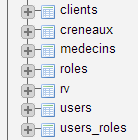 |
Appointments are managed by the following tables:
- [doctors]: contains the list of doctors at the practice;
- [clients]: contains the list of the practice’s patients;
- [slots]: contains the time slots for each doctor;
- [rv]: contains the list of doctors' appointments.
The tables [roles], [users], and [users_roles] are related to authentication. For now, we won’t be dealing with them.
The relationships between the tables managing appointments are as follows:
 |
- a time slot belongs to a doctor – a doctor has 0 or more time slots;
- an appointment connects both a client and a doctor via the doctor’s time slot;
- a client has 0 or more appointments;
- a time slot is associated with 0 or more appointments (on different days).
2.1.1. The [MEDECINS] table
It contains information about the doctors managed by the [RdvMedecins] application.
 |  |
- ID: ID number identifying the doctor—primary key of the table
- VERSION: Number identifying the version of the row in the table. This number is incremented by 1 each time a change is made to the row.
- LAST_NAME: the doctor's last name
- FIRST_NAME: the doctor's first name
- TITLE: their title (Ms., Mrs., Mr.)
2.1.2. The [CLIENTS] table
The clients of the various doctors are stored in the [CLIENTS] table:
 |  |
- ID: ID number identifying the client - primary key of the table
- VERSION: number identifying the version of the row in the table. This number is incremented by 1 each time a change is made to the row.
- LAST NAME: the client's last name
- FIRST NAME: the client’s first name
- TITLE: their title (Ms., Mrs., Mr.)
2.1.3. The [SLOTS] table
It lists the time slots when appointments are available:
 |
 |
- ID: ID number for the time slot - primary key of the table (row 8)
- VERSION: number identifying the version of the row in the table. This number is incremented by 1 each time a change is made to the row.
- DOCTOR_ID: ID number identifying the doctor to whom this time slot belongs – foreign key on the DOCTORS(ID) column.
- START_TIME: Start time of the time slot
- MSTART: Start minutes of the time slot
- HFIN: slot end time
- MFIN: End minutes of the slot
The second row of the [SLOTS] table (see [1] above) indicates, for example, that slot #2 begins at 8:20 a.m. and ends at 8:40 a.m. and belongs to doctor #1 (Ms. Marie PELISSIER).
2.1.4. The [RV] table
It lists the appointments booked for each doctor:
 |
- ID: unique identifier for the appointment – primary key
- DAY: day of the appointment
- SLOT_ID: appointment time slot – foreign key on the [ID] field of the [SLOTS] table – determines both the time slot and the doctor involved.
- CLIENT_ID: ID of the client for whom the reservation is made – foreign key on the [ID] field of the [CLIENTS] table
This table has a uniqueness constraint on the values of the joined columns (DAY, SLOT_ID):
If a row in the [RV] table has the value (DAY1, SLOT_ID1) for the columns (DAY, SLOT_ID), this value cannot appear anywhere else. Otherwise, this would mean that two appointments were booked at the same time for the same doctor. From a Java programming perspective, the database’s JDBC driver throws an SQLException when this occurs.
The row with ID equal to 3 (see [1] above) means that an appointment was booked for slot #20 and client #4 on 08/23/2006. The [SLOTS] table tells us that slot #20 corresponds to the time slot 4:20 PM – 4:40 PM and belongs to doctor #1 (Ms. Marie PELISSIER). The [CLIENTS] table tells us that client #4 is Ms. Brigitte BISTROU.
2.2. Introduction to Spring Data
We will implement the [DAO] layer of the project using Spring Data, a branch of the Spring ecosystem.
 |
The Spring website offers numerous tutorials to get started with Spring [http://spring.io/guides]. We will use one of them to introduce Spring Data. To do this, we will use Spring Tool Suite (STS).
 |
- In [1], we import one of the tutorials from [spring.io/guides];
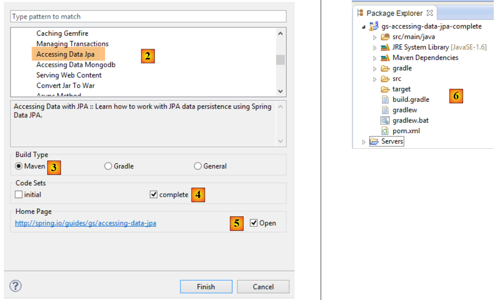 |
- In [2], we select the [Accessing Data Jpa] tutorial, which demonstrates how to access a database using Spring Data;
- In [3], we select a project configured by Maven;
- in [4], the tutorial is available in two forms: [initial], which is an empty version that you fill in by following the tutorial, or [complete], which is the final version of the tutorial. We choose the latter;
- In [5], you can choose to view the tutorial in a browser;
- In [6], the final project.
2.2.1. The project’s Maven configuration
The project’s Maven dependencies are configured in the [pom.xml] file:
<groupId>org.springframework</groupId>
<artifactId>gs-accessing-data-jpa</artifactId>
<version>0.1.0</version>
<parent>
<groupId>org.springframework.boot</groupId>
<artifactId>spring-boot-starter-parent</artifactId>
<version>1.0.2.RELEASE</version>
</parent>
<dependencies>
<dependency>
<groupId>org.springframework.boot</groupId>
<artifactId>spring-boot-starter-data-jpa</artifactId>
</dependency>
<dependency>
<groupId>com.h2database</groupId>
<artifactId>h2</artifactId>
</dependency>
</dependencies>
<properties>
<!-- use UTF-8 for everything -->
<project.build.sourceEncoding>UTF-8</project.build.sourceEncoding>
<project.reporting.outputEncoding>UTF-8</project.reporting.outputEncoding>
<start-class>hello.Application</start-class>
</properties>
- lines 5–9: define a parent Maven project. This project defines most of the project’s dependencies. They may be sufficient, in which case no additional dependencies are added, or they may not be, in which case the missing dependencies are added;
- lines 12–15: define a dependency on [spring-boot-starter-data-jpa]. This artifact contains the Spring Data classes;
- Lines 16–19: define a dependency on the H2 DBMS, which allows you to create and manage in-memory databases.
Let’s look at the classes provided by these dependencies:
 |  |  |
There are many of them:
- some belong to the Spring ecosystem (those starting with spring);
- others belong to the Hibernate ecosystem (hibernate, jboss), whose JPA implementation we are using here;
- others are testing libraries (JUnit, Hamcrest);
- others are logging libraries (log4j, logback, slf4j);
We’re going to keep them all. For a production application, we should only keep the ones that are necessary.
On line 26 of the [pom.xml] file, we find the line:
<start-class>hello.Application</start-class>
This line is linked to the following lines:
<build>
<plugins>
<plugin>
<artifactId>maven-compiler-plugin</artifactId>
</plugin>
<plugin>
<groupId>org.springframework.boot</groupId>
<artifactId>spring-boot-maven-plugin</artifactId>
</plugin>
</plugins>
</build>
Lines 6–9: The [spring-boot-maven-plugin] allows you to generate the application’s executable JAR. Line 26 of the [pom.xml] file then specifies the executable class of this JAR.
2.2.2. The [JPA] layer
Database access is handled through a [JPA] layer, the Java Persistence API:
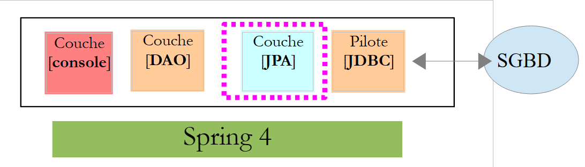 |
 |
The application is basic and manages [Customer] entities. The [Customer] class is part of the [JPA] layer and is as follows:
package hello;
import javax.persistence.Entity;
import javax.persistence.GeneratedValue;
import javax.persistence.GenerationType;
import javax.persistence.Id;
@Entity
public class Customer {
@Id
@GeneratedValue(strategy = GenerationType.AUTO)
private long id;
private String firstName;
private String lastName;
protected Customer() {
}
public Customer(String firstName, String lastName) {
this.firstName = firstName;
this.lastName = lastName;
}
@Override
public String toString() {
return String.format("Customer[id=%d, firstName='%s', lastName='%s']", id, firstName, lastName);
}
}
A customer has an ID [id], a first name [firstName], and a last name [lastName]. Each [Customer] instance represents a row in a database table.
- line 8: JPA annotation that ensures the persistence of [Customer] instances (Create, Read, Update, Delete) will be managed by a JPA implementation. Based on the Maven dependencies, we can see that the JPA/Hibernate implementation is being used;
- Lines 11–12: JPA annotations that associate the [id] field with the primary key of the [Customer] table. Line 12 indicates that the JPA implementation will use the primary key generation method specific to the DBMS being used, in this case H2;
There are no other JPA annotations. Default values will therefore be used:
- the [Customer] table will be named after the class, i.e., [Customer];
- the columns of this table will be named after the class fields: [id, firstName, lastName], noting that case is not taken into account in table column names;
Note that the JPA implementation used is never named.
2.2.3. The [DAO] layer
 |
 |
The [CustomerRepository] class implements the [DAO] layer. Its code is as follows:
package hello;
import java.util.List;
import org.springframework.data.repository.CrudRepository;
public interface CustomerRepository extends CrudRepository<Customer, Long> {
List<Customer> findByLastName(String lastName);
}
This is therefore an interface and not a class (line 7). It extends the [CrudRepository] interface, a Spring Data interface (line 5). This interface is parameterized by two types: the first is the type of the managed elements, here the [Customer] type; the second is the type of the primary key of the managed elements, here a [Long] type. The [CrudRepository] interface is as follows:
package org.springframework.data.repository;
import java.io.Serializable;
@NoRepositoryBean
public interface CrudRepository<T, ID extends Serializable> extends Repository<T, ID> {
<S extends T> S save(S entity);
<S extends T> Iterable<S> save(Iterable<S> entities);
T findOne(ID id);
boolean exists(ID id);
Iterable<T> findAll();
Iterable<T> findAll(Iterable<ID> ids);
long count();
void delete(ID id);
void delete(T entity);
void delete(Iterable<? extends T> entities);
void deleteAll();
}
This interface defines the CRUD (Create – Read – Update – Delete) operations that can be performed on a JPA T type:
- Line 8: The
savemethod is used to persist an entityTin the database. It persists the entity using the primary key assigned to it by the DBMS. It also allows you to update an entityTidentified by its primary keyid. The choice between these two actions depends on the value of the primary key id: if it is null, the persistence operation occurs; otherwise, the update operation occurs; - line 10: same as above, but for a list of entities;
- line 12: the findOne method retrieves an entity T identified by its primary key id;
- line 22: the delete method allows you to delete an entity T identified by its primary key id;
- lines 24–28: variations of the [delete] method;
- line 16: the [findAll] method retrieves all persisted T entities;
- line 18: same as above, but limited to entities for which a list of identifiers has been provided;
Let’s return to the [CustomerRepository] interface:
package hello;
import java.util.List;
import org.springframework.data.repository.CrudRepository;
public interface CustomerRepository extends CrudRepository<Customer, Long> {
List<Customer> findByLastName(String lastName);
}
- Line 9 allows you to retrieve a [Customer] by its [lastName];
And that’s it for the [DAO] layer. There is no implementation class for the previous interface. It is generated at runtime by [Spring Data]. The methods of the [CrudRepository] interface are automatically implemented. For the methods added to the [CustomerRepository] interface, it depends. Let’s go back to the definition of [Customer]:
private long id;
private String firstName;
private String lastName;
The method on line 9 is automatically implemented by [Spring Data] because it references the [lastName] field (line 3) of [Customer]. When it encounters a [findBySomething] method in the interface to be implemented, Spring Data implements it using the following JPQL (Java Persistence Query Language) query:
Therefore, the type T must have a field named [something]. Thus, the method
will be implemented with code similar to the following:
return [em].createQuery("select c from Customer c where c.lastName=:value").setParameter("value",lastName).getResultList()
where [em] refers to the JPA persistence context. This is only possible if the [Customer] class has a field named [lastName], which is the case.
In conclusion, in simple cases, Spring Data allows us to implement the [DAO] layer with a simple interface.
2.2.4. The [console] layer
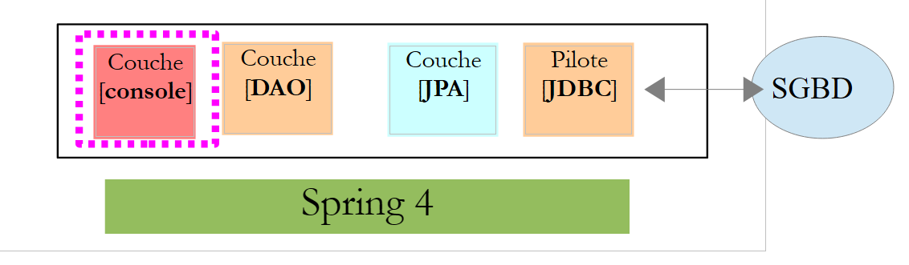 |
 |
The [Application] class is as follows:
package hello;
import java.util.List;
import org.springframework.boot.SpringApplication;
import org.springframework.boot.autoconfigure.EnableAutoConfiguration;
import org.springframework.context.ConfigurableApplicationContext;
import org.springframework.context.annotation.Configuration;
@Configuration
@EnableAutoConfiguration
public class Application {
public static void main(String[] args) {
ConfigurableApplicationContext context = SpringApplication.run(Application.class);
CustomerRepository repository = context.getBean(CustomerRepository.class);
// save a couple of customers
repository.save(new Customer("Jack", "Bauer"));
repository.save(new Customer("Chloe", "O'Brian"));
repository.save(new Customer("Kim", "Bauer"));
repository.save(new Customer("David", "Palmer"));
repository.save(new Customer("Michelle", "Dessler"));
// fetch all customers
Iterable<Customer> customers = repository.findAll();
System.out.println("Customers found with findAll():");
System.out.println("-------------------------------");
for (Customer customer : customers) {
System.out.println(customer);
}
System.out.println();
// fetch an individual customer by ID
Customer customer = repository.findOne(1L);
System.out.println("Customer found with findOne(1L):");
System.out.println("--------------------------------");
System.out.println(customer);
System.out.println();
// fetch customers by last name
List<Customer> bauers = repository.findByLastName("Bauer");
System.out.println("Customer found with findByLastName('Bauer'):");
System.out.println("--------------------------------------------");
for (Customer bauer : bauers) {
System.out.println(bauer);
}
context.close();
}
}
- Line 10: indicates that the class is used to configure Spring. Recent versions of Spring can indeed be configured in Java rather than in XML. Both methods can be used simultaneously. In the code of a class annotated with [Configuration], we normally find Spring beans, i.e., class definitions to be instantiated. Here, no beans are defined. It is important to note here that when working with a DBMS, various Spring beans must be defined:
- an [EntityManagerFactory] that defines the JPA implementation to use,
- a [DataSource] that defines the data source to use,
- a [TransactionManager] that defines the transaction manager to use;
Here, none of these beans are defined.
- Line 11: The [EnableAutoConfiguration] annotation is an annotation from the [Spring Boot] project (lines 5–6). This annotation instructs Spring Boot via the [SpringApplication] class (line 16) to configure the application based on the libraries found in its classpath. Because the Hibernate libraries are in the classpath, the [entityManagerFactory] bean will be implemented using Hibernate. Because the H2 DBMS library is in the classpath, the [dataSource] bean will be implemented using H2. In the [dataSource] bean, we must also define the username and password. Here, Spring Boot will use the default H2 administrator, which has no password. Because the [spring-tx] library is in the Classpath, Spring’s transaction manager will be used.
Additionally, the directory containing the [Application] class will be scanned for beans implicitly recognized by Spring or explicitly defined by Spring annotations. Thus, the [Customer] and [CustomerRepository] classes will be inspected. Because the first has the [@Entity] annotation, it will be cataloged as an entity to be managed by Hibernate. Because the second extends the [CrudRepository] interface, it will be registered as a Spring bean.
Let’s examine lines 16–17 of the code:
ConfigurableApplicationContext context = SpringApplication.run(Application.class);
CustomerRepository repository = context.getBean(CustomerRepository.class);
- Line 1: The static [run] method of the [SpringApplication] class in the Spring Boot project is executed. Its parameter is the class that has a [Configuration] or [EnableAutoConfiguration] annotation. Everything explained previously will then take place. The result is a Spring application context, i.e., a set of beans managed by Spring;
- line 17: we request a bean implementing the [CustomerRepository] interface from this Spring context. Here, we retrieve the class generated by Spring Data to implement this interface.
The following operations simply use the methods of the bean implementing the [CustomerRepository] interface. Note on line 50 that the context is closed. The console output is as follows:
. ____ _ __ _ _
/\\ / ___'_ __ _ _(_)_ __ __ _ \ \ \ \
( ( )\___ | '_ | '_| | '_ \/ _` | \ \ \ \
\\/ ___)| |_)| | | | | || (_| | ) ) ) )
' |____| .__|_| |_|_| |_\__, | / / / /
=========|_|==============|___/=/_/_/_/
:: Spring Boot :: (v1.0.2.RELEASE)
2014-06-05 16:23:13.877 INFO 11664 --- [ main] hello.Application : Starting Application on Gportpers3 with PID 11664 (D:\Temp\wksSTS\gs-accessing-data-jpa-complete\target\classes started by ST in D:\Temp\wksSTS\gs-accessing-data-jpa-complete)
2014-06-05 16:23:13.936 INFO 11664 --- [ main] s.c.a.AnnotationConfigApplicationContext : Refreshing org.springframework.context.annotation.AnnotationConfigApplicationContext@331a8fa0: startup date [Thu Jun 05 16:23:13 CEST 2014]; root of context hierarchy
2014-06-05 16:23:15.424 INFO 11664 --- [ main] j.LocalContainerEntityManagerFactoryBean : Building JPA container EntityManagerFactory for persistence unit 'default'
2014-06-05 16:23:15.518 INFO 11664 --- [ main] o.hibernate.jpa.internal.util.LogHelper : HHH000204: Processing PersistenceUnitInfo [
name: default
...]
2014-06-05 16:23:15.690 INFO 11664 --- [ main] org.hibernate.Version : HHH000412: Hibernate Core {4.3.1.Final}
2014-06-05 16:23:15.692 INFO 11664 --- [ main] org.hibernate.cfg.Environment : HHH000206: hibernate.properties not found
2014-06-05 16:23:15.694 INFO 11664 --- [ main] org.hibernate.cfg.Environment : HHH000021: Bytecode provider name: javassist
2014-06-05 16:23:15.988 INFO 11664 --- [ main] o.hibernate.annotations.common.Version : HCANN000001: Hibernate Commons Annotations {4.0.4.Final}
2014-06-05 16:23:16.078 INFO 11664 --- [ main] org.hibernate.dialect.Dialect : HHH000400: Using dialect: org.hibernate.dialect.H2Dialect
2014-06-05 16:23:16.300 INFO 11664 --- [ main] o.h.h.i.ast.ASTQueryTranslatorFactory : HHH000397: Using ASTQueryTranslatorFactory
2014-06-05 16:23:16.613 INFO 11664 --- [ main] org.hibernate.tool.hbm2ddl.SchemaExport : HHH000227: Running hbm2ddl schema export
Hibernate: drop table customer if exists
Hibernate: create table customer (id bigint generated by default as identity, first_name varchar(255), last_name varchar(255), primary key (id))
2014-06-05 16:23:16.619 INFO 11664 --- [ main] org.hibernate.tool.hbm2ddl.SchemaExport : HHH000230: Schema export complete
2014-06-05 16:23:17.074 INFO 11664 --- [ main] o.s.j.e.a.AnnotationMBeanExporter : Registering beans for JMX exposure on startup
2014-06-05 16:23:17.094 INFO 11664 --- [ main] hello.Application : Started Application in 3.906 seconds (JVM running for 5.013)
Hibernate: insert into customer (id, first_name, last_name) values (null, ?, ?)
Hibernate: insert into customer (id, first_name, last_name) values (null, ?, ?)
Hibernate: insert into customer (id, first_name, last_name) values (null, ?, ?)
Hibernate: insert into customer (id, first_name, last_name) values (null, ?, ?)
Hibernate: insert into customer (id, first_name, last_name) values (null, ?, ?)
Hibernate: select customer0_.id as id1_0_, customer0_.first_name as first_name2_0_, customer0_.last_name as last_name3_0_ from customer customer0_
Customers found with findAll():
-------------------------------
Customer[id=1, firstName='Jack', lastName='Bauer']
Customer[id=2, firstName='Chloe', lastName='O'Brian']
Customer[id=3, firstName='Kim', lastName='Bauer']
Customer[id=4, firstName='David', lastName='Palmer']
Customer[id=5, firstName='Michelle', lastName='Dessler']
Hibernate: select customer0_.id as id1_0_0_, customer0_.first_name as first_name2_0_0_, customer0_.last_name as last_name3_0_0_ from customer0_ where customer0_.id=?
Customer found with findOne(1L):
--------------------------------
Customer[id=1, firstName='Jack', lastName='Bauer']
Hibernate: select customer0_.id as id1_0_, customer0_.first_name as first_na2_0_, customer0_.last_name as last_nam3_0_ from customer customer0_ where customer0_.last_name=?
Customer found with findByLastName('Bauer'):
--------------------------------------------
Customer[id=1, firstName='Jack', lastName='Bauer']
Customer[id=3, firstName='Kim', lastName='Bauer']
2014-06-05 16:23:17.330 INFO 11664 --- [ main] s.c.a.AnnotationConfigApplicationContext : Closing org.springframework.context.annotation.AnnotationConfigApplicationContext@331a8fa0: startup date [Thu Jun 05 16:23:13 CEST 2014]; root of context hierarchy
2014-06-05 16:23:17.332 INFO 11664 --- [ main] o.s.j.e.a.AnnotationMBeanExporter : Unregistering JMX-exposed beans on shutdown
2014-06-05 16:23:17.333 INFO 11664 --- [ main] j.LocalContainerEntityManagerFactoryBean : Closing JPA EntityManagerFactory for persistence unit 'default'
2014-06-05 16:23:17.334 INFO 11664 --- [ main] org.hibernate.tool.hbm2ddl.SchemaExport : HHH000227: Running hbm2ddl schema export
Hibernate: drop table customer if exists
2014-06-05 16:23:17.336 INFO 11664 --- [ main] org.hibernate.tool.hbm2ddl.SchemaExport : HHH000230: Schema export complete
- lines 1-8: the Spring Boot project logo;
- line 9: the [hello.Application] class is executed;
- line 10: [AnnotationConfigApplicationContext] is a class implementing Spring’s [ApplicationContext] interface. It is a bean container;
- line 11: the [entityManagerFactory] bean is implemented using the [LocalContainerEntityManagerFactory] class, a Spring class;
- line 12: [hibernate] appears. This is the JPA implementation that has been chosen;
- line 19: a Hibernate dialect is the SQL variant to be used with the DBMS. Here, the [H2Dialect] dialect indicates that Hibernate will work with the H2 DBMS;
- lines 22–24: the [CUSTOMER] table is created. This means that Hibernate has been configured to generate tables from JPA definitions, in this case the JPA definition of the [Customer] class;
- lines 27–32: Hibernate logs showing the insertion of rows into the [CUSTOMER] table. This means that Hibernate has been configured to generate logs;
- lines 35–39: the five customers inserted;
- lines 42–44: result of the [findOne] method of the interface;
- lines 47–50: results of the [findByLastName] method;
- lines 51 and following: logs from closing the Spring context.
2.2.5. Manual configuration of the Spring Data project
We duplicate the previous project into the [gs-accessing-data-jpa-2] project:
 |
In this new project, we will not rely on the automatic configuration provided by Spring Boot. We will configure it manually. This can be useful if the default configurations do not suit our needs.
First, we will specify the necessary dependencies in the [pom.xml] file:
<dependencies>
<!-- Spring Core -->
<dependency>
<groupId>org.springframework</groupId>
<artifactId>spring-core</artifactId>
<version>4.0.5.RELEASE</version>
</dependency>
<dependency>
<groupId>org.springframework</groupId>
<artifactId>spring-context</artifactId>
<version>4.0.5.RELEASE</version>
</dependency>
<dependency>
<groupId>org.springframework</groupId>
<artifactId>spring-beans</artifactId>
<version>4.0.5.RELEASE</version>
</dependency>
<!-- Spring transactions -->
<dependency>
<groupId>org.springframework</groupId>
<artifactId>spring-aop</artifactId>
<version>4.0.5.RELEASE</version>
</dependency>
<dependency>
<groupId>org.springframework</groupId>
<artifactId>spring-tx</artifactId>
<version>4.0.5.RELEASE</version>
</dependency>
<!-- Spring Data -->
<dependency>
<groupId>org.springframework.data</groupId>
<artifactId>spring-data-jpa</artifactId>
<version>1.5.2.RELEASE</version>
</dependency>
<!-- Spring Boot -->
<dependency>
<groupId>org.springframework.boot</groupId>
<artifactId>spring-boot</artifactId>
<version>1.0.2.RELEASE</version>
</dependency>
<!-- Hibernate -->
<dependency>
<groupId>org.hibernate</groupId>
<artifactId>hibernate-entitymanager</artifactId>
<version>4.3.4.Final</version>
</dependency>
<!-- H2 Database -->
<dependency>
<groupId>com.h2database</groupId>
<artifactId>h2</artifactId>
<version>1.4.178</version>
</dependency>
<!-- Commons DBCP -->
<dependency>
<groupId>commons-dbcp</groupId>
<artifactId>commons-dbcp</artifactId>
<version>1.4</version>
</dependency>
<dependency>
<groupId>commons-pool</groupId>
<artifactId>commons-pool</artifactId>
<version>1.6</version>
</dependency>
</dependencies>
- lines 3–17: Spring core libraries;
- lines 19–28: Spring libraries for managing database transactions;
- lines 30–34: Spring Data used to access the database;
- lines 36–40: Spring Boot to launch the application;
- lines 48–52: the H2 DBMS;
- lines 54–63: Databases are often used with open connection pools, which avoid repeatedly opening and closing connections. Here, the implementation used is that of [commons-dbcp];
Still in [pom.xml], we change the name of the executable class:
<properties>
...
<start-class>demo.console.Main</start-class>
</properties>
In the new project, the [Customer] entity and the [CustomerRepository] interface remain unchanged. We will modify the [Application] class, which will be split into two classes:
- [Config], which will be the configuration class:
- [Main], which will be the executable class;
 |
The executable class [Main] is the same as before, without the configuration annotations:
package demo.console;
import java.util.List;
import org.springframework.boot.SpringApplication;
import org.springframework.context.ConfigurableApplicationContext;
import demo.config.Config;
import demo.entities.Customer;
import demo.repositories.CustomerRepository;
public class Main {
public static void main(String[] args) {
ConfigurableApplicationContext context = SpringApplication.run(Config.class);
CustomerRepository repository = context.getBean(CustomerRepository.class);
...
context.close();
}
}
- line 12: the [Main] class no longer has any configuration annotations;
- line 16: the application is launched with Spring Boot. The [Config.class] parameter is the project’s new configuration class;
The [Config] class that configures the project is as follows:
package demo.config;
import javax.persistence.EntityManagerFactory;
import javax.sql.DataSource;
import org.apache.commons.dbcp.BasicDataSource;
import org.springframework.context.annotation.Bean;
import org.springframework.context.annotation.Configuration;
import org.springframework.data.jpa.repository.config.EnableJpaRepositories;
import org.springframework.orm.jpa.JpaTransactionManager;
import org.springframework.orm.jpa.JpaVendorAdapter;
import org.springframework.orm.jpa.LocalContainerEntityManagerFactoryBean;
import org.springframework.orm.jpa.vendor.Database;
import org.springframework.orm.jpa.vendor.HibernateJpaVendorAdapter;
import org.springframework.transaction.PlatformTransactionManager;
import org.springframework.transaction.annotation.EnableTransactionManagement;
//@ComponentScan(basePackages = { "demo" })
//@EntityScan(basePackages = { "demo.entities" })
@EnableTransactionManagement
@EnableJpaRepositories(basePackages = { "demo.repositories" })
@Configuration
public class Config {
// the H2 database
@Bean
public DataSource dataSource() {
BasicDataSource dataSource = new BasicDataSource();
dataSource.setDriverClassName("org.h2.Driver");
dataSource.setUrl("jdbc:h2:./demo");
dataSource.setUsername("sa");
dataSource.setPassword("");
return dataSource;
}
// the JPA provider
@Bean
public JpaVendorAdapter jpaVendorAdapter() {
HibernateJpaVendorAdapter hibernateJpaVendorAdapter = new HibernateJpaVendorAdapter();
hibernateJpaVendorAdapter.setShowSql(false);
hibernateJpaVendorAdapter.setGenerateDdl(true);
hibernateJpaVendorAdapter.setDatabase(Database.H2);
return hibernateJpaVendorAdapter;
}
// EntityManagerFactory
@Bean
public EntityManagerFactory entityManagerFactory(JpaVendorAdapter jpaVendorAdapter, DataSource dataSource) {
LocalContainerEntityManagerFactoryBean factory = new LocalContainerEntityManagerFactoryBean();
factory.setJpaVendorAdapter(jpaVendorAdapter);
factory.setPackagesToScan("demo.entities");
factory.setDataSource(dataSource);
factory.afterPropertiesSet();
return factory.getObject();
}
// Transaction manager
@Bean
public PlatformTransactionManager transactionManager(EntityManagerFactory entityManagerFactory) {
JpaTransactionManager txManager = new JpaTransactionManager();
txManager.setEntityManagerFactory(entityManagerFactory);
return txManager;
}
}
- line 22: the [@Configuration] annotation makes the [Config] class a Spring configuration class;
- line 21: the [@EnableJpaRepositories] annotation specifies the directories where the Spring Data [CrudRepository] interfaces are located. These interfaces will become Spring components and be available in its context;
- line 20: the [@EnableTransactionManagement] annotation indicates that the methods of the [CrudRepository] interfaces must be executed within a transaction;
- line 19: the [@EntityScan] annotation specifies the directories where JPA entities should be searched for. Here it has been commented out because this information was explicitly provided on line 50. This annotation should be present if using [@EnableAutoConfiguration] mode and the JPA entities are not in the same directory as the configuration class;
- line 18: the [@ComponentScan] annotation allows you to list the directories where Spring components should be searched for. Spring components are classes tagged with Spring annotations such as @Service, @Component, @Controller, etc. Here, there are no others besides those defined within the [Config] class, so the annotation has been commented out;
- Lines 25–33: define the data source, the H2 database. It is the @Bean annotation on line 25 that makes the object created by this method a Spring-managed component. The method name here can be anything. However, it must be named [dataSource] if the EntityManagerFactory on line 47 is absent and defined via auto-configuration;
- line 29: the database will be named [demo] and will be generated in the project folder;
- Lines 36–43: define the JPA implementation used, in this case a Hibernate implementation. The method name here can be anything;
- line 39: no SQL logs;
- line 30: the database will be created if it does not exist;
- lines 46–54: define the EntityManagerFactory that will manage JPA persistence. The method must be named [entityManagerFactory];
- line 47: the method receives two parameters of the types of the two beans defined previously. These will then be constructed and injected by Spring as method parameters;
- line 49: sets the JPA implementation to be used;
- line 50: specifies the directories where the JPA entities can be found;
- line 51: sets the data source to be managed;
- lines 57–62: the transaction manager. The method must be named [transactionManager]. It receives the bean from lines 46–54 as a parameter;
- line 60: the transaction manager is associated with the EntityManagerFactory;
The preceding methods can be defined in any order.
Running the project yields the same results. A new file appears in the project folder, the H2 database file:
 |
Finally, we can do without Spring Boot. We create a second executable class [Main2]:
 |
The [Main2] class has the following code:
package demo.console;
import java.util.List;
import org.springframework.context.annotation.AnnotationConfigApplicationContext;
import demo.config.Config;
import demo.entities.Customer;
import demo.repositories.CustomerRepository;
public class Main2 {
public static void main(String[] args) {
AnnotationConfigApplicationContext context = new AnnotationConfigApplicationContext(Config.class);
CustomerRepository repository = context.getBean(CustomerRepository.class);
....
context.close();
}
}
- Line 15: The configuration class [Config] is now used by the Spring class [AnnotationConfigApplicationContext]. As seen on line 5, there is no longer any dependency on Spring Boot.
Execution yields the same results as before.
2.2.6. Creating an executable archive
To create an executable archive of the project, proceed as follows:
 |
- in [1]: create a runtime configuration;
- in [2]: of type [Java Application]
- in [3]: specify the project to run (use the Browse button);
- in [4]: specify the class to run;
- in [5]: the name of the run configuration—can be anything;
 |
- in [6]: export the project;
- in [7]: as an executable JAR archive;
- in [8]: specify the path and name of the executable file to be created;
- in [9]: the name of the run configuration created in [5];
Once this is done, open a console in the folder containing the executable archive:
The archive is executed as follows:
.....\dist>java -jar gs-accessing-data-jpa-2.jar
The results displayed in the console are as follows:
SLF4J: Failed to load class "org.slf4j.impl.StaticLoggerBinder".
SLF4J: Defaulting to no-operation (NOP) logger implementation
SLF4J: See http://www.slf4j.org/codes.html#StaticLoggerBinder for further details.
June 12, 2014 9:48:38 AM org.hibernate.ejb.HibernatePersistence logDeprecation
WARN: HHH015016: Encountered a deprecated javax.persistence.spi.PersistenceProvider [org.hibernate.ejb.HibernatePersistence]; use [org.hibernate.jpa.HibernatePersistenceProvider] instead.
June 12, 2014 9:48:38 AM org.hibernate.jpa.internal.util.LogHelper logPersistenceUnitInformation
INFO: HHH000204: Processing PersistenceUnitInfo [
name: default
...]
June 12, 2014 9:48:38 AM org.hibernate.Version logVersion
INFO: HHH000412: Hibernate Core {4.3.4.Final}
June 12, 2014 9:48:38 AM org.hibernate.cfg.Environment <clinit>
INFO: HHH000206: hibernate.properties not found
June 12, 2014 9:48:38 AM org.hibernate.cfg.Environment buildBytecodeProvider
INFO: HHH000021: Bytecode provider name: javassist
June 12, 2014 9:48:39 AM org.hibernate.annotations.common.reflection.java.JavaReflectionManager <clinit>
INFO: HCANN000001: Hibernate Commons Annotations {4.0.4.Final}
June 12, 2014 9:48:39 AM org.hibernate.dialect.Dialect <init>
INFO: HHH000400: Using dialect: org.hibernate.dialect.H2Dialect
June 12, 2014 9:48:39 AM org.hibernate.hql.internal.ast.ASTQueryTranslatorFactory <init>
INFO: HHH000397: Using ASTQueryTranslatorFactory
June 12, 2014 9:48:40 AM org.hibernate.tool.hbm2ddl.SchemaUpdate execute
INFO: HHH000228: Running hbm2ddl schema update
June 12, 2014 9:48:40 AM org.hibernate.tool.hbm2ddl.SchemaUpdate execute
INFO: HHH000102: Fetching database metadata
June 12, 2014 9:48:40 AM org.hibernate.tool.hbm2ddl.SchemaUpdate execute
INFO: HHH000396: Updating schema
June 12, 2014 9:48:40 AM org.hibernate.tool.hbm2ddl.DatabaseMetadata getTableMetadata
INFO: HHH000262: Table not found: Customer
June 12, 2014 9:48:40 AM org.hibernate.tool.hbm2ddl.DatabaseMetadata getTableMetadata
INFO: HHH000262: Table not found: Customer
June 12, 2014 9:48:40 AM org.hibernate.tool.hbm2ddl.DatabaseMetadata getTableMetadata
INFO: HHH000262: Table not found: Customer
June 12, 2014 9:48:40 AM org.hibernate.tool.hbm2ddl.SchemaUpdate execute
INFO: HHH000232: Schema update complete
Customers found with findAll():
-------------------------------
Customer[id=1, firstName='Jack', lastName='Bauer']
Customer[id=2, firstName='Chloe', lastName='O'Brian']
Customer[id=3, firstName='Kim', lastName='Bauer']
Customer[id=4, firstName='David', lastName='Palmer']
Customer[id=5, firstName='Michelle', lastName='Dessler']
Customer found with findOne(1L):
--------------------------------
Customer[id=1, firstName='Jack', lastName='Bauer']
Customer found with findByLastName('Bauer'):
--------------------------------------------
Customer[id=1, firstName='Jack', lastName='Bauer']
Customer[id=3, firstName='Kim', lastName='Bauer']
2.2.7. Create a new Spring Data project
To create a Spring Data project template, follow these steps:
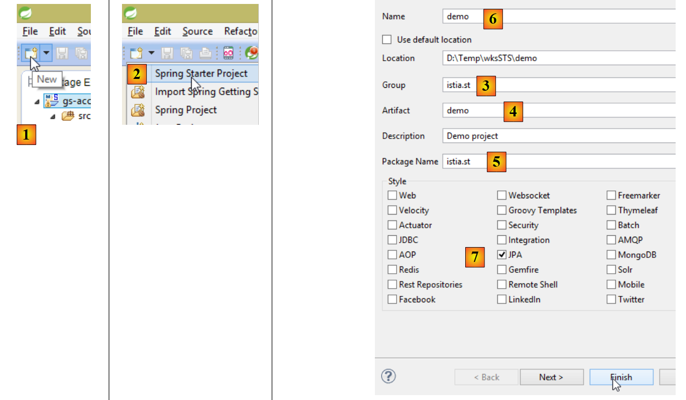 |
- In [1], create a new project;
- in [2]: select [Spring Starter Project];
- The generated project will be a Maven project. In [3], specify the project group name;
- In [4], specify the name of the artifact (a JAR file in this case) that will be created when the project is built;
- in [5]: specify the package of the executable class that will be created in the project;
- in [6]: the Eclipse name of the project – can be anything (does not have to be the same as [4]);
- in [7]: specify that you are creating a project with a [JPA] layer. The dependencies required for such a project will then be included in the [pom.xml] file;
 |
- in [8]: the created project;
The [pom.xml] file includes the dependencies required for a JPA project:
<parent>
<groupId>org.springframework.boot</groupId>
<artifactId>spring-boot-starter-parent</artifactId>
<version>1.1.0.RELEASE</version>
<relativePath/> <!-- lookup parent from repository -->
</parent>
<dependencies>
<dependency>
<groupId>org.springframework.boot</groupId>
<artifactId>spring-boot-starter-data-jpa</artifactId>
</dependency>
<dependency>
<groupId>org.springframework.boot</groupId>
<artifactId>spring-boot-starter-test</artifactId>
<scope>test</scope>
</dependency>
</dependencies>
- lines 9–12: dependencies required for JPA—will include [Spring Data];
- lines 13–17: dependencies required for JUnit tests integrated with Spring;
The executable class [Application] does nothing but is pre-configured:
package istia.st;
import org.springframework.boot.SpringApplication;
import org.springframework.boot.autoconfigure.EnableAutoConfiguration;
import org.springframework.context.annotation.ComponentScan;
import org.springframework.context.annotation.Configuration;
@Configuration
@ComponentScan
@EnableAutoConfiguration
public class Application {
public static void main(String[] args) {
SpringApplication.run(Application.class, args);
}
}
The test class [ApplicationTests] does nothing but is preconfigured:
package istia.st;
import org.junit.Test;
import org.junit.runner.RunWith;
import org.springframework.boot.test.SpringApplicationConfiguration;
import org.springframework.test.context.junit4.SpringJUnit4ClassRunner;
@RunWith(SpringJUnit4ClassRunner.class)
@SpringApplicationConfiguration(classes = Application.class)
public class ApplicationTests {
@Test
public void contextLoads() {
}
}
- line 9: the [@SpringApplicationConfiguration] annotation allows the [Application] configuration file to be used. The test class will thus benefit from all the beans defined in this file;
- line 8: the [@RunWith] annotation enables the integration of Spring with JUnit: the class can be executed as a JUnit test. [@RunWith] is a JUnit annotation (line 4), while the [SpringJUnit4ClassRunner] class is a Spring class (line 6);
Now that we have a JPA application skeleton, we can complete it to write the server-side persistence layer of our appointment management application.
2.3. The Eclipse server project
 |
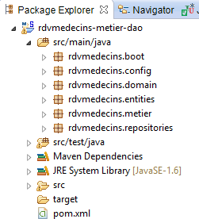 |
The main components of the project are as follows:
- [pom.xml]: the project’s Maven configuration file;
- [rdvmedecins.entities]: the JPA entities;
- [rdvmedecins.repositories]: Spring Data interfaces for accessing JPA entities;
- [rdvmedecins.metier]: the [business] layer;
- [rdvmedecins.domain]: the entities handled by the [business] layer;
- [rdvmdecins.config]: the configuration classes of the persistence layer;
- [rdvmedecins.boot]: a basic console application;
2.4. The Maven configuration
 |  |  |
The project's [pom.xml] file is as follows:
<?xml version="1.0" encoding="UTF-8"?>
<project xmlns="http://maven.apache.org/POM/4.0.0" xsi:schemaLocation="http://maven.apache.org/POM/4.0.0 http://maven.apache.org/maven-v4_0_0.xsd"
xmlns:xsi="http://www.w3.org/2001/XMLSchema-instance">
<modelVersion>4.0.0</modelVersion>
<groupId>istia.st.spring4.rdvmedecins</groupId>
<artifactId>rdvmedecins-metier-dao</artifactId>
<version>0.0.1-SNAPSHOT</version>
<parent>
<groupId>org.springframework.boot</groupId>
<artifactId>spring-boot-starter-parent</artifactId>
<version>1.0.0.RELEASE</version>
</parent>
<dependencies>
<dependency>
<groupId>org.springframework.boot</groupId>
<artifactId>spring-boot-starter-data-jpa</artifactId>
</dependency>
<dependency>
<groupId>org.springframework.boot</groupId>
<artifactId>spring-boot-starter-test</artifactId>
<scope>test</scope>
</dependency>
<dependency>
<groupId>mysql</groupId>
<artifactId>mysql-connector-java</artifactId>
</dependency>
<dependency>
<groupId>commons-dbcp</groupId>
<artifactId>commons-dbcp</artifactId>
</dependency>
<dependency>
<groupId>commons-pool</groupId>
<artifactId>commons-pool</artifactId>
</dependency>
<dependency>
<groupId>com.fasterxml.jackson.core</groupId>
<artifactId>jackson-databind</artifactId>
</dependency>
<dependency>
<groupId>com.google.guava</groupId>
<artifactId>guava</artifactId>
<version>16.0.1</version>
</dependency>
</dependencies>
<properties>
<!-- use UTF-8 for everything -->
<project.build.sourceEncoding>UTF-8</project.build.sourceEncoding>
<project.reporting.outputEncoding>UTF-8</project.reporting.outputEncoding>
<start-class>istia.st.spring.data.main.Application</start-class>
</properties>
<build>
<plugins>
<plugin>
<artifactId>maven-compiler-plugin</artifactId>
</plugin>
<plugin>
<groupId>org.springframework.boot</groupId>
<artifactId>spring-boot-maven-plugin</artifactId>
</plugin>
</plugins>
</build>
<repositories>
<repository>
<id>spring-milestones</id>
<name>Spring Milestones</name>
<url>http://repo.spring.io/libs-milestone</url>
<snapshots>
<enabled>false</enabled>
</snapshots>
</repository>
<repository>
<id>org.jboss.repository.releases</id>
<name>JBoss Maven Release Repository</name>
<url>https://repository.jboss.org/nexus/content/repositories/releases</url>
<snapshots>
<enabled>false</enabled>
</snapshots>
</repository>
</repositories>
<pluginRepositories>
<pluginRepository>
<id>spring-milestones</id>
<name>Spring Milestones</name>
<url>http://repo.spring.io/libs-milestone</url>
<snapshots>
<enabled>false</enabled>
</snapshots>
</pluginRepository>
</pluginRepositories>
</project>
- lines 8–12: The project relies on the parent project [spring-boot-starter-parent]. For dependencies already present in the parent project, no version is specified. The version defined in the parent will be used. Other dependencies are declared as usual;
- lines 14–17: for Spring Data;
- lines 18–22: for JUnit tests;
- lines 23–26: JDBC driver for the MySQL5 DBMS;
- lines 27–34: Commons DBCP connection pool;
- lines 35–38: Jackson library for JSON handling;
- lines 39–43: Google Collections library;
Version 1.1.0.RC1 of [spring-boot-starter-parent] uses the following library versions:
<activemq.version>5.9.1</activemq.version>
<aspectj.version>1.8.0</aspectj.version>
<codahale-metrics.version>3.0.2</codahale-metrics.version>
<commons-beanutils.version>1.9.1</commons-beanutils.version>
<commons-collections.version>3.2.1</commons-collections.version>
<commons-dbcp.version>1.4</commons-dbcp.version>
<commons-digester.version>2.1</commons-digester.version>
<commons-pool.version>1.6</commons-pool.version>
<commons-pool2.version>2.2</commons-pool2.version>
<crashub.version>1.3.0-beta20</crashub.version>
<flyway.version>3.0</flyway.version>
<freemarker.version>2.3.20</freemarker.version>
<gemfire.version>7.0.2</gemfire.version>
<gradle.version>1.6</gradle.version>
<groovy.version>2.3.2</groovy.version>
<h2.version>1.3.175</h2.version>
<hamcrest.version>1.3</hamcrest.version>
<hibernate-entitymanager.version>4.3.1.Final</hibernate-entitymanager.version>
<hibernate-jpa-api.version>1.0.1.Final</hibernate-jpa-api.version>
<hibernate-validator.version>5.0.3.Final</hibernate-validator.version>
<hibernate.version>4.3.1.Final</hibernate.version>
<hikaricp.version>1.3.8</hikaricp.version>
<hornetq.version>2.4.1.Final</hornetq.version>
<hsqldb.version>2.3.2</hsqldb.version>
<httpasyncclient.version>4.0.1</httpasyncclient.version>
<httpclient.version>4.3.3</httpclient.version>
<jackson.version>2.3.3</jackson.version>
<java.version>1.6</java.version>
<javassist.version>3.18.1-GA</javassist.version>
<jedis.version>2.4.1</jedis.version>
<jetty-jsp.version>2.2.0.v201112011158</jetty-jsp.version>
<jetty.version>8.1.14.v20131031</jetty.version>
<joda-time.version>2.3</joda-time.version>
<jolokia.version>1.2.0</jolokia.version>
<jstl.version>1.2</jstl.version>
<junit.version>4.11</junit.version>
<liquibase.version>3.0.8</liquibase.version>
<log4j.version>1.2.17</log4j.version>
<logback.version>1.1.2</logback.version>
<mockito.version>1.9.5</mockito.version>
<mongodb.version>2.12.1</mongodb.version>
<mysql.version>5.1.30</mysql.version>
<project.build.sourceEncoding>UTF-8</project.build.sourceEncoding>
<project.reporting.outputEncoding>UTF-8</project.reporting.outputEncoding>
<reactor.version>1.1.1.RELEASE</reactor.version>
<servlet-api.version>3.0.1</servlet-api.version>
<slf4j.version>1.7.7</slf4j.version>
<snakeyaml.version>1.13</snakeyaml.version>
<solr.version>4.7.2</solr.version>
<spock.version>0.7-groovy-2.0</spock.version>
<spring-amqp.version>1.3.4.RELEASE</spring-amqp.version>
<spring-batch.version>3.0.0.RELEASE</spring-batch.version>
<spring-boot.version>1.1.0.RC1</spring-boot.version>
<spring-data-releasetrain.version>Dijkstra-RELEASE</spring-data-releasetrain.version>
<spring-hateoas.version>0.12.0.RELEASE</spring-hateoas.version>
<spring-integration.version>4.0.2.RELEASE</spring-integration.version>
<spring-loaded.version>1.2.0.RELEASE</spring-loaded.version>
<spring-mobile.version>1.1.1.RELEASE</spring-mobile.version>
<spring-security-jwt.version>1.0.2.RELEASE</spring-security-jwt.version>
<spring-security.version>3.2.4.RELEASE</spring-security.version>
<spring-social-facebook.version>1.1.1.RELEASE</spring-social-facebook.version>
<spring-social-linkedin.version>1.0.1.RELEASE</spring-social-linkedin.version>
<spring-social-twitter.version>1.1.0.RELEASE</spring-social-twitter.version>
<spring-social.version>1.1.0.RELEASE</spring-social.version>
<spring.version>4.0.5.RELEASE</spring.version>
<thymeleaf-extras-springsecurity3.version>2.1.1.RELEASE</thymeleaf-extras-springsecurity3.version>
<thymeleaf-layout-dialect.version>1.2.4</thymeleaf-layout-dialect.version>
<thymeleaf.version>2.1.3.RELEASE</thymeleaf.version>
<tomcat.version>7.0.54</tomcat.version>
<velocity-tools.version>2.0</velocity-tools.version>
<velocity.version>1.7</velocity.version>
2.5. JPA Entities
 |
JPA entities are the objects that encapsulate the rows in the database tables.
 |
The [AbstractEntity] class is the parent class of the [Person, Slot, Appointment] entities. Its definition is as follows:
package rdvmedecins.entities;
import java.io.Serializable;
import javax.persistence.GeneratedValue;
import javax.persistence.GenerationType;
import javax.persistence.Id;
import javax.persistence.MappedSuperclass;
import javax.persistence.Version;
@MappedSuperclass
public class AbstractEntity implements Serializable {
private static final long serialVersionUID = 1L;
@Id
@GeneratedValue(strategy = GenerationType.AUTO)
protected Long id;
@Version
protected Long version;
@Override
public int hashCode() {
int hash = 0;
hash += (id != null ? id.hashCode() : 0);
return hash;
}
// initialization
public AbstractEntity build(Long id, Long version) {
this.id = id;
this.version = version;
return this;
}
@Override
public boolean equals(Object entity) {
String class1 = this.getClass().getName();
String class2 = entity.getClass().getName();
if (!class2.equals(class1)) {
return false;
}
AbstractEntity other = (AbstractEntity) entity;
return this.id == other.id;
}
// getters and setters
..
}
- line 11: the [@MappedSuperclass] annotation indicates that the annotated class is a parent of JPA [@Entity] entities;
- lines 15–17: define the primary key [id] for each entity. It is the [@Id] annotation that makes the [id] field a primary key. The [@GeneratedValue(strategy = GenerationType.AUTO)] annotation indicates that the value of this primary key is generated by the DBMS and that no generation mode is enforced;
- Lines 18–19: define the version of each entity. The JPA implementation will increment this version number each time the entity is modified. This number is used to prevent simultaneous updates of the entity by two different users: two users, U1 and U2, read entity E with a version number equal to V1. U1 modifies E and persists this change to the database: the version number then changes to V1+1. U2 modifies E in turn and persists this change to the database: they will receive an exception because their version (V1) differs from the one in the database (V1+1);
- lines 29–33: the [build] method initializes the two fields of [AbstractEntity]. This method returns a reference to the [AbstractEntity] instance thus initialized;
- lines 36–44: the class’s [equals] method is redefined: two entities are considered equal if they have the same class name and the same id identifier;
The [Person] entity is the parent class of the [Doctor] and [Client] entities:
package rdvmedecins.entities;
import javax.persistence.Column;
import javax.persistence.MappedSuperclass;
@MappedSuperclass
public class Person extends AbstractEntity {
private static final long serialVersionUID = 1L;
// attributes of a person
@Column(length = 5)
private String title;
@Column(length = 20)
private String lastName;
@Column(length = 20)
private String firstName;
// default constructor
public Person() {
}
// constructor with parameters
public Person(String title, String lastName, String firstName) {
this.title = title;
this.lastName = lastName;
this.firstName = firstName;
}
// toString
public String toString() {
return String.format("Person[%s, %s, %s, %s, %s]", id, version, title, last_name, first_name);
}
// getters and setters
...
}
- line 6: the [@MappedSuperclass] annotation indicates that the annotated class is a parent of JPA entities [@Entity];
- lines 10–15: a person has a title (Ms.), a first name (Jacqueline), and a last name (Tatou). No information is provided about the table columns. By default, they will therefore have the same names as the fields;
The [Medecin] entity is as follows:
package rdvmedecins.entities;
import javax.persistence.Entity;
import javax.persistence.Table;
@Entity
@Table(name = "medecins")
public class Doctor extends Person {
private static final long serialVersionUID = 1L;
// default constructor
public Doctor() {
}
// constructor with parameters
public Doctor(String title, String lastName, String firstName) {
super(title, lastName, firstName);
}
public String toString() {
return String.format("Doctor[%s]", super.toString());
}
}
- line 6: the class is a JPA entity;
- line 7: associated with the [DOCTORS] table in the database;
- line 8: the [Doctor] entity derives from the [Person] entity;
A doctor can be initialized as follows:
If we also want to assign an ID and a version to it, we can write:
where the [build] method is the one defined in [AbstractEntity].
The [Client] entity is as follows:
package rdvmedecins.entities;
import javax.persistence.Entity;
import javax.persistence.Table;
@Entity
@Table(name = "clients")
public class Client extends Person {
private static final long serialVersionUID = 1L;
// default constructor
public Client() {
}
// constructor with parameters
public Client(String title, String lastName, String firstName) {
super(title, lastName, firstName);
}
// identity
public String toString() {
return String.format("Client[%s]", super.toString());
}
}
- line 6: the class is a JPA entity;
- line 7: associated with the [CLIENTS] table in the database;
- line 8: the [Client] entity derives from the [Person] entity;
The [TimeSlot] entity is as follows:
package rdvmedecins.entities;
import javax.persistence.Column;
import javax.persistence.Entity;
import javax.persistence.FetchType;
import javax.persistence.JoinColumn;
import javax.persistence.ManyToOne;
import javax.persistence.Table;
@Entity
@Table(name = "slots")
public class Slot extends AbstractEntity {
private static final long serialVersionUID = 1L;
// Characteristics of an appointment slot
private int startTime;
private int startMinute;
private int endHour;
private int endMin;
// A time slot is linked to a doctor
@ManyToOne(fetch = FetchType.LAZY)
@JoinColumn(name = "id_doctor")
private Doctor doctor;
// foreign key
@Column(name = "id_medecin", insertable = false, updatable = false)
private long doctorId;
// default constructor
public Creneau() {
}
// constructor with parameters
public Slot(Doctor doctor, int startTime, int startMinute, int endTime, int endMinute) {
this.doctor = doctor;
this.startTime = startTime;
this.startTime = startTime;
this.endTime = endTime;
this.end_time = end_time;
}
// toString
public String toString() {
return String.format("Slot[%d, %d, %d, %d:%d, %d:%d]", id, version, doctorId, startTime, startMinute, endTime, endMinute);
}
// foreign key
public long getDoctorId() {
return doctorId;
}
// setters - getters
...
}
- line 10: the class is a JPA entity;
- line 11: associated with the [CRENEAUX] table in the database;
- line 12: the [Creneau] entity derives from the [AbstractEntity] entity and therefore inherits the [id] and [version] fields;
- line 16: slot start time (14);
- line 17: start minutes of the slot (20);
- line 18: end time of the slot (14);
- line 19: end minutes of the slot (40);
- lines 22–24: the doctor who owns the slot. The [CRENEAUX] table has a foreign key on the [MEDECINS] table. This relationship is represented by lines 22–24;
- Line 22: The [@ManyToOne] annotation indicates a many-to-one relationship (slots) to one (doctor). The [fetch=FetchType.LAZY] attribute specifies that when a [Creneau] entity is requested from the persistence context and must be retrieved from the database, the [Medecin] entity is not fetched along with it. The advantage of this mode is that the [Doctor] entity is only retrieved if the developer requests it. This saves memory and improves performance;
- line 23: specifies the name of the foreign key column in the [CRENEAUX] table;
- Lines 27–28: the foreign key on the [MEDECINS] table;
- line 27: the [ID_MEDECIN] column has already been used on line 23. This means it can be modified in two different ways, which is not allowed by the JPA standard. We therefore add the attributes [insertable = false, updatable = false], which means the column can only be read;
The [Rv] entity is as follows:
package rdvmedecins.entities;
import java.util.Date;
import javax.persistence.Column;
import javax.persistence.Entity;
import javax.persistence.FetchType;
import javax.persistence.JoinColumn;
import javax.persistence.ManyToOne;
import javax.persistence.Table;
import javax.persistence.Temporal;
import javax.persistence.TemporalType;
@Entity
@Table(name = "rv")
public class Rv extends AbstractEntity {
private static final long serialVersionUID = 1L;
// characteristics of an Rv
@Temporal(TemporalType.DATE)
private Date day;
// An Rv is associated with a client
@ManyToOne(fetch = FetchType.LAZY)
@JoinColumn(name = "id_client")
private Client client;
// A reservation is linked to a time slot
@ManyToOne(fetch = FetchType.LAZY)
@JoinColumn(name = "slot_id")
private Slot slot;
// foreign keys
@Column(name = "id_client", insertable = false, updatable = false)
private long clientId;
@Column(name = "id_slot", insertable = false, updatable = false)
private long idSlot;
// default constructor
public Rv() {
}
// with parameters
public Rv(Date day, Client client, Slot slot) {
this.day = day;
this.client = client;
this.slot = slot;
}
// toString
public String toString() {
return String.format("Appointment[%d, %s, %d, %d]", id, day, client.id, slot.id);
}
// foreign keys
public long getSlotId() {
return slotId;
}
public long getClientId() {
return idClient;
}
// getters and setters
...
}
- line 14: the class is a JPA entity;
- line 15: associated with the [RV] table in the database;
- line 16: the [Rv] entity derives from the [AbstractEntity] entity and therefore inherits the [id] and [version] fields;
- line 21: the appointment date;
- line 20: the Java type [Date] contains both a date and a time. Here we specify that only the date is used;
- lines 24–26: the customer for whom this appointment was made. The [RV] table has a foreign key on the [CLIENTS] table. This relationship is represented by lines 24–26;
- lines 29–31: the appointment time slot. The [RV] table has a foreign key on the [CRENEAUX] table. This relationship is represented by lines 29–31;
- rows 34–35: the foreign key [idClient];
- rows 36–37: the foreign key [idCreneau];
2.6. The [DAO] layer
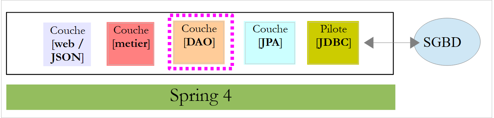 |
We will implement the [DAO] layer using Spring Data:
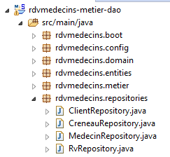 |
The [DAO] layer is implemented using four Spring Data interfaces:
- [ClientRepository]: provides access to the JPA entities [Client];
- [CreneauRepository]: provides access to [Creneau] JPA entities;
- [MedecinRepository]: provides access to [Medecin] JPA entities;
- [RvRepository]: provides access to [Rv] JPA entities;
The [MedecinRepository] interface is as follows:
package rdvmedecins.repositories;
import org.springframework.data.repository.CrudRepository;
import rdvmedecins.entities.Medecin;
public interface MedecinRepository extends CrudRepository<Medecin, Long> {
}
- Line 7: The [MedecinRepository] interface simply inherits the methods from the [CrudRepository] interface without adding any others;
The [ClientRepository] interface is as follows:
package rdvmedecins.repositories;
import org.springframework.data.repository.CrudRepository;
import rdvmedecins.entities.Client;
public interface ClientRepository extends CrudRepository<Client, Long> {
}
- Line 7: The [ClientRepository] interface simply inherits the methods from the [CrudRepository] interface without adding any others;
The [CreneauRepository] interface is as follows:
package rdvmedecins.repositories;
import org.springframework.data.jpa.repository.Query;
import org.springframework.data.repository.CrudRepository;
import rdvmedecins.entities.Creneau;
public interface CreneauRepository extends CrudRepository<Creneau, Long> {
// list of a doctor's available time slots
@Query("select c from Creneau c where c.medecin.id=?1")
Iterable<Creneau> getAllCreneaux(long idMedecin);
}
- line 8: the [CreneauRepository] interface inherits the methods of the [CrudRepository] interface;
- lines 10-11: the [getAllCreneaux] method retrieves a doctor's available time slots;
- line 11: the parameter is the doctor’s ID. The result is a list of time slots in the form of an [Iterable<Creneau>] object;
- line 10: the [@Query] annotation is used to specify the JPQL (Java Persistence Query Language) query that implements the method. The parameter [?1] will be replaced by the [idMedecin] parameter of the method;
The [RvRepository] interface is as follows:
package rdvmedecins.repositories;
import java.util.Date;
import org.springframework.data.jpa.repository.Query;
import org.springframework.data.repository.CrudRepository;
import rdvmedecins.entities.Rv;
public interface RvRepository extends CrudRepository<Rv, Long> {
@Query("select rv from Rv rv left join fetch rv.client c left join fetch rv.creneau cr where cr.medecin.id=?1 and rv.jour=?2")
Iterable<Rv> getRvMedecinJour(long idMedecin, Date jour);
}
- Line 10: The [RvRepository] interface inherits the methods of the [CrudRepository] interface;
- Lines 12–13: The [getRvMedecinJour] method retrieves a doctor’s appointments for a given day;
- line 13: The parameters are the doctor’s ID and the day. The result is a list of appointments in the form of an [Iterable<Rv>] object;
- line 12: the [@Query] annotation allows you to specify the JPQL query that implements the method. The [?1] parameter will be replaced by the method’s [idMedecin] parameter, and the [?2] parameter will be replaced by the method’s [jour] parameter. The following JPQL query is not sufficient:
because the fields of the Rv class, of types [Client] and [Creneau], are retrieved in [FetchType.LAZY] mode, which means they must be explicitly requested to be obtained. This is done in the JPQL query using the [left join fetch entity] syntax, which requires a join to be performed with the table referenced by the foreign key in order to retrieve the referenced entity;
2.7. The [business] layer
 |
 |
- [IMetier] is the interface of the [business] layer and [Metier] is its implementation;
- [DoctorDailySchedule] and [DoctorDailySlot] are two business entities;
2.7.1. The entities
The [DoctorTimeSlot] entity associates a time slot with any appointment booked within that slot:
package rdvmedecins.domain;
import java.io.Serializable;
import rdvmedecins.entities.Creneau;
import rdvmedecins.entities.Rv;
public class CreneauMedecinJour implements Serializable {
private static final long serialVersionUID = 1L;
// fields
private Creneau creneau;
private Rv rv;
// constructors
public CreneauMedecinJour() {
}
public DayDoctorSlot(Slot slot, Appointment appointment) {
this.slot = slot;
this.rv = rv;
}
// toString
@Override
public String toString() {
return String.format("[%s %s]", creneau, rv);
}
// getters and setters
...
}
- line 12: the time slot;
- line 13: the appointment, if any – null otherwise;
The [AgendaMedecinJour] entity is a doctor's schedule for a given day, i.e., the list of their appointments:
package rdvmedecins.domain;
import java.io.Serializable;
import java.text.SimpleDateFormat;
import java.util.Date;
import rdvmedecins.entities.Medecin;
public class Doctor'sSchedule implements Serializable {
private static final long serialVersionUID = 1L;
// fields
private Doctor doctor;
private Date day;
private DoctorAppointmentTimeSlots[] doctorAppointmentTimeSlots;
// constructors
public DoctorAppointment() {
}
public DayDoctorAppointment(Doctor doctor, Date date, DayDoctorAppointmentSlots[] dayDoctorAppointmentSlots) {
this.doctor = doctor;
this.day = day;
this.doctorSlotList = doctorSlotList;
}
public String toString() {
StringBuffer str = new StringBuffer("");
for (DayDoctorSlot cr : dayDoctorSlots) {
str.append(" ");
str.append(cr.toString());
}
return String.format("Schedule[%s,%s,%s]", doctor, new SimpleDateFormat("dd/MM/yyyy").format(day), str.toString());
}
// getters and setters
...
}
- line 13: the doctor;
- line 14: the day in the calendar;
- line 15: their available time slots, with or without an appointment;
2.7.2. The service
The interface of the [business] layer is as follows:
package rdvmedecins.business;
import java.util.Date;
import java.util.List;
import rdvmedecins.domain.Doctor'sDailySchedule;
import rdvmedecins.entities.Client;
import rdvmedecins.entities.TimeSlot;
import rdvmedecins.entities.Doctor;
import rdvmedecins.entities.Rv;
public interface IBusiness {
// list of clients
public List<Client> getAllClients();
// list of doctors
public List<Doctor> getAllDoctors();
// list of a doctor's available time slots
public List<TimeSlot> getAllTimeSlots(long doctorId);
// list of a doctor's appointments on a given day
public List<Appointment> getDoctorAppointmentsForDay(long doctorId, Date day);
// find a client identified by their ID
public Client getClientById(long id);
// Find a client identified by their ID
public Doctor getDoctorById(long id);
// find an appointment identified by its ID
public Appointment getAppointmentById(long id);
// Find a time slot identified by its ID
public Slot getSlotById(long id);
// add an appointment
public Rv addAppointment(Date date, TimeSlot timeSlot, Client client);
// delete an appointment
public void deleteAppointment(Appointment appointment);
// business logic
public DoctorDailySchedule getDoctorDailySchedule(long doctorId, Date date);
}
The comments explain the role of each method.
The implementation of the [IMetier] interface is the following [Metier] class:
package rdvmedecins.metier;
import java.util.Date;
import java.util.Hashtable;
import java.util.List;
import java.util.Map;
import org.springframework.beans.factory.annotation.Autowired;
import org.springframework.stereotype.Service;
import rdvmedecins.domain.DoctorScheduleDay;
import rdvmedecins.domain.DoctorAppointmentSlot;
import rdvmedecins.entities.Client;
import rdvmedecins.entities.TimeSlot;
import rdvmedecins.entities.Doctor;
import rdvmedecins.entities.Appointment;
import rdvmedecins.repositories.ClientRepository;
import rdvmedecins.repositories.TimeSlotRepository;
import rdvmedecins.repositories.DoctorRepository;
import rdvmedecins.repositories.RvRepository;
import com.google.common.collect.Lists;
@Service("business")
public class BusinessImplementation implements IBusinessImplementation {
// repositories
@Autowired
private DoctorRepository doctorRepository;
@Autowired
private ClientRepository clientRepository;
@Autowired
private AppointmentRepository appointmentRepository;
@Autowired
private RvRepository rvRepository;
// interface implementation
@Override
public List<Client> getAllClients() {
return Lists.newArrayList(clientRepository.findAll());
}
@Override
public List<Doctor> getAllDoctors() {
return Lists.newArrayList(doctorRepository.findAll());
}
@Override
public List<AppointmentSlot> getAllAppointmentSlots(long doctorId) {
return Lists.newArrayList(appointmentRepository.getAllAppointments(doctorId));
}
@Override
public List<Rv> getDoctorAppointment(long doctorId, Date day) {
return Lists.newArrayList(rvRepository.getRvMedecinJour(idMedecin, jour));
}
@Override
public Client getClientById(long id) {
return clientRepository.findOne(id);
}
@Override
public Doctor getDoctorById(long id) {
return doctorRepository.findOne(id);
}
@Override
public Rv getRvById(long id) {
return rvRepository.findOne(id);
}
@Override
public Creneau getCreneauById(long id) {
return slotRepository.findOne(id);
}
@Override
public Rv addRv(Date date, Creneau slot, Client client) {
return rvRepository.save(new Rv(day, client, slot));
}
@Override
public void deleteRv(Rv rv) {
rvRepository.delete(rv.getId());
}
public DoctorSchedule getDoctorSchedule(long doctorId, Date day) {
...
}
}
- line 24: the [@Service] annotation is a Spring annotation that makes the annotated class a Spring-managed component. You may or may not give a name to a component. This one is named [business];
- line 25: the [Metier] class implements the [IMetier] interface;
- line 28: the [@Autowired] annotation is a Spring annotation. The value of the field annotated in this way will be initialized (injected) by Spring with the reference to a Spring component of the specified type or name. Here, the [@Autowired] annotation does not specify a name. Therefore, type-based injection will be performed;
- line 29: the [medecinRepository] field will be initialized with the reference to a Spring component of type [MedecinRepository]. This will be the reference to the class generated by Spring Data to implement the [MedecinRepository] interface that we have already presented;
- lines 30–35: this process is repeated for the other three interfaces discussed;
- lines 39–41: implementation of the [getAllClients] method;
- line 40: we use the [findAll] method of the [ClientRepository] interface. This method returns a [Iterable<Client>] type, which we convert to a [List<Client>] using the static method [Lists.newArrayList]. The [Lists] class is defined in the Google Guava library. In [pom.xml], this dependency has been imported:
<dependency>
<groupId>com.google.guava</groupId>
<artifactId>guava</artifactId>
<version>16.0.1</version>
</dependency>
- lines 38–86: the methods of the [IMetier] interface are implemented using classes from the [DAO] layer;
Only the method on line 88 is specific to the [business] layer. It was placed here because it performs business logic that goes beyond simple data access. Without this method, there would be no reason to create a [business] layer. The [getAgendaMedecinJour] method is as follows:
public AgendaMedecinJour getAgendaMedecinJour(long idMedecin, Date jour) {
// list of the doctor's time slots
List<TimeSlot> availableTimeSlots = getAllTimeSlots(doctorId);
// list of appointments for this doctor on this day
List<Appointment> appointments = getDoctorAppointmentsByDay(doctorId, day);
// create a dictionary from the appointments taken
Map<Long, Appointment> hReservations = new Hashtable<Long, Appointment>();
for (Rv appointment : reservations) {
hReservations.put(resa.getCreneau().getId(), resa);
}
// Create the schedule for the requested day
DailyDoctorSchedule agenda = new DailyDoctorSchedule();
// the doctor
agenda.setDoctor(getDoctorById(doctorId));
// the day
agenda.setDay(day);
// the appointment slots
DoctorTimeSlots[] doctorTimeSlots = new DoctorTimeSlots[timeSlots.size()];
calendar.setDoctorSlotDay(doctorSlotDay);
// filling the appointment slots
for (int i = 0; i < timeSlots.size(); i++) {
// row i in the calendar
daytimeDoctorSlots[i] = new DaytimeDoctorSlot();
// time slot
TimeSlot timeSlot = timeSlots.get(i);
long slotId = slot.getId();
daytimeDoctorSlots[i].setSlot(slot);
// Is the slot available or booked?
if (hReservations.containsKey(slotId)) {
// the slot is occupied - note the reservation
Reservation res = hReservations.get(slotId);
doctor-day-slots[i].setAppointment(reservation);
}
}
// return the result
return agenda;
}
Readers are encouraged to read the comments. The algorithm is as follows:
- retrieve all time slots for the specified doctor;
- retrieve all their appointments for the specified day;
- with this information, we can determine whether a time slot is available or booked;
2.8. Project configuration
 |
The [DomainAndPersistenceConfig] class configures the entire project:
package rdvmedecins.config;
import javax.sql.DataSource;
import org.apache.commons.dbcp.BasicDataSource;
import org.springframework.boot.autoconfigure.EnableAutoConfiguration;
import org.springframework.boot.orm.jpa.EntityScan;
import org.springframework.context.annotation.Bean;
import org.springframework.context.annotation.ComponentScan;
import org.springframework.data.jpa.repository.config.EnableJpaRepositories;
import org.springframework.orm.jpa.JpaVendorAdapter;
import org.springframework.orm.jpa.vendor.Database;
import org.springframework.orm.jpa.vendor.HibernateJpaVendorAdapter;
import org.springframework.transaction.annotation.EnableTransactionManagement;
@EnableJpaRepositories(basePackages = { "rdvmedecins.repositories" })
@EnableAutoConfiguration
@ComponentScan(basePackages = { "rdvmedecins" })
@EntityScan(basePackages = { "rdvmedecins.entities" })
@EnableTransactionManagement
public class DomainAndPersistenceConfig {
// the MySQL data source
@Bean
public DataSource dataSource() {
BasicDataSource dataSource = new BasicDataSource();
dataSource.setDriverClassName("com.mysql.jdbc.Driver");
dataSource.setUrl("jdbc:mysql://localhost:3306/dbrdvmedecins");
dataSource.setUsername("root");
dataSource.setPassword("");
return dataSource;
}
// the JPA provider - not necessary if you are satisfied with the default values used by Spring Boot
// Here we define it to enable/disable SQL logs
@Bean
public JpaVendorAdapter jpaVendorAdapter() {
HibernateJpaVendorAdapter hibernateJpaVendorAdapter = new HibernateJpaVendorAdapter();
hibernateJpaVendorAdapter.setShowSql(false);
hibernateJpaVendorAdapter.setGenerateDdl(false);
hibernateJpaVendorAdapter.setDatabase(Database.MYSQL);
return hibernateJpaVendorAdapter;
}
// The EntityManagerFactory and TransactionManager are configured with default values by Spring Boot
}
- Line 45: We will not define the [EntityManagerFactory] and [TransactionManager] beans. Instead, we will rely on Spring Boot’s [@EnableAutoConfiguration] annotation (line 17);
- Lines 24–32: Define the MySQL 5 data source. This is a bean that Spring Boot generally cannot auto-configure;
- lines 36–43: We also configure the JPA implementation to set Hibernate’s [showSql] attribute to false (line 39). By default, it is set to true;
- For now, the only components managed by Spring are the beans in lines 25 and 37, plus the [EntityManagerFactory] and [TransactionManager] beans via auto-configuration. We need to add the beans from the [business] and [DAO] layers;
- Line 16 adds the interfaces from the [rdvmdecins.repositories] package that inherit from the [CrudRepository] interface to the Spring context;
- Line 18 adds to the Spring context all classes in the [rdvmedecins] package and its subclasses that have a Spring annotation. In the [rdvmdecins.metier] package, the [Metier] class with its [@Service] annotation will be found and added to the Spring context;
- Line 45: A [entityManagerFactory] bean will be defined by default by Spring Boot. We must tell this bean where the JPA entities it needs to manage are located. Line 19 does this;
- line 20: specifies that the methods of interfaces inheriting from the [CrudRepository] interface must be executed within a transaction;
2.9. Tests for the [business] layer
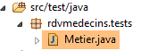 |
The [rdvmedecins.tests.Metier] class is a Spring/JUnit 4 test class:
package rdvmedecins.tests;
import java.text.ParseException;
import java.util.Date;
import java.util.List;
import org.junit.Assert;
import org.junit.Test;
import org.junit.runner.RunWith;
import org.springframework.beans.factory.annotation.Autowired;
import org.springframework.boot.test.SpringApplicationConfiguration;
import org.springframework.test.context.junit4.SpringJUnit4ClassRunner;
import rdvmedecins.config.DomainAndPersistenceConfig;
import rdvmedecins.domain.Doctor'sDailySchedule;
import rdvmedecins.entities.Client;
import rdvmedecins.entities.TimeSlot;
import rdvmedecins.entities.Doctor;
import rdvmedecins.entities.Appointment;
import rdvmedecins.business.IMetier;
@SpringApplicationConfiguration(classes = DomainAndPersistenceConfig.class)
@RunWith(SpringJUnit4ClassRunner.class)
public class BusinessLogic {
@Autowired
private IMetier business;
@Test
public void test1(){
// display clients
List<Client> clients = business.getAllClients();
display("List of clients:", clients);
// display doctors
List<Doctor> doctors = business.getAllDoctors();
display("List of doctors:", doctors);
// Display a doctor's available slots
Doctor doctor = doctors.get(0);
List<Slot> slots = department.getAllSlots(doctor.getId());
display(String.format("List of %s's available slots", doctor), slots);
// List of a doctor's appointments on a given day
Date day = new Date();
display(String.format("List of appointments for doctor %s on [%s]", doctor, day), profession.getDoctorAppointments(doctor.getId(), day));
// add an appointment
Appointment appointment = null;
Time slot timeSlot = timeSlots.get(2);
Client client = clients.get(0);
System.out.println(String.format("Adding an appointment on [%s] in slot %s for client %s", day, slot,
client));
rv = business.addAppointment(day, slot, client);
// verification
Appointment rv2 = business.getAppointmentById(rv.getId());
Assert.assertEquals(rv, rv2);
display(String.format("List of appointments for doctor %s, on [%s]", doctor, day), business.getDoctorAppointmentsByDay(doctor.getId(), day));
// Add an appointment in the same time slot on the same day
// should throw an exception
System.out.println(String.format("Adding an appointment on [%s] in slot %s for client %s", day, slot,
client));
Boolean error = false;
try {
appointment = business.addAppointment(day, time slot, client);
System.out.println("Appointment added");
} catch (Exception ex) {
Throwable th = ex;
while (th != null) {
System.out.println(ex.getMessage());
th = th.getCause();
}
// record the error
error = true;
}
// check if an error occurred
Assert.assertTrue(error);
// list of appointments
display(String.format("List of appointments for doctor %s, on [%s]", doctor, day), profession.getRvMedecinJour(doctor.getId(), day));
// display calendar
DailyDoctorSchedule schedule = business.getDailyDoctorSchedule(doctor.getId(), day);
System.out.println(calendar);
Assert.assertEquals(appointment, calendar.getDoctorSlot(2).getAppointment());
// delete an appointment
System.out.println("Deleting the added appointment");
business.deleteAppointment(rv);
// verification
rv2 = business.getAppointmentById(rv.getId());
Assert.assertNull(rv2);
display(String.format("List of appointments for doctor %s, on [%s]", doctor, day), business.getDoctorAppointmentsById(doctor.getId(), day));
}
// utility method - displays the elements of a collection
private void display(String message, Iterable<?> elements) {
System.out.println(message);
for (Object element : elements) {
System.out.println(element);
}
}
}
- line 22: the [@SpringApplicationConfiguration] annotation allows the [DomainAndPersistenceConfig] configuration file discussed earlier to be used. The test class thus benefits from all the beans defined by this file;
- line 23: the [@RunWith] annotation enables the integration of Spring with JUnit: the class can be executed as a JUnit test. [@RunWith] is a JUnit annotation (line 9), whereas the [SpringJUnit4ClassRunner] class is a Spring class (line 12);
- Lines 26–27: Injection of a reference to the [business] layer into the test class;
- many tests are simply visual tests:
- lines 32–33: list of clients;
- lines 35–36: list of doctors;
- lines 39–40: list of a doctor’s time slots;
- line 43: list of a doctor's appointments;
- line 50: add a new appointment. The [addAppt] method returns the appointment with additional information, its primary key id;
- line 53: this primary key is used to search for the appointment in the database;
- line 54: we verify that the appointment being searched for and the appointment found are the same. Recall that the [equals] method of the [Rv] entity has been redefined: two appointments are equal if they have the same id. Here, this shows us that the added appointment has indeed been inserted into the database;
- Lines 61–73: We attempt to add the same appointment a second time. This should be rejected by the DBMS because there is a uniqueness constraint:
CREATE TABLE IF NOT EXISTS `rv` (
`ID` bigint(20) NOT NULL AUTO_INCREMENT,
`DATE` date NOT NULL,
`ID_CLIENT` bigint(20) NOT NULL,
`SLOT_ID` bigint(20) NOT NULL,
`VERSION` int(11) NOT NULL DEFAULT '0',
PRIMARY KEY (`ID`),
UNIQUE KEY `UNQ1_RV` (`DAY`, `SLOT_ID`),
KEY `FK_RV_ID_SLOT` (`SLOT_ID`),
KEY `FK_RV_ID_CLIENT` (`ID_CLIENT`)
) ENGINE=InnoDB DEFAULT CHARSET=utf8 COLLATE=utf8_swedish_ci AUTO_INCREMENT=60 ;
Line 8 above specifies that the combination [DAY, SLOT_ID] must be unique, which prevents two appointments from being scheduled in the same time slot on the same day.
- line 73: we verify that an exception has indeed occurred;
- line 77: we retrieve the calendar of the doctor for whom we just added an appointment;
- line 79: we verify that the added appointment is indeed present in their schedule;
- line 82: delete the added appointment;
- line 84: retrieve the deleted appointment from the database;
- line 85: we check that we have retrieved a null pointer, indicating that the appointment we searched for does not exist;
The test runs successfully:
 |
2.10. The console program
 |
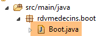 |
The console program is basic. It illustrates how to retrieve a foreign key:
package rdvmedecins.boot;
import java.text.SimpleDateFormat;
import java.util.Date;
import org.springframework.boot.SpringApplication;
import org.springframework.context.ConfigurableApplicationContext;
import rdvmedecins.config.DomainAndPersistenceConfig;
import rdvmedecins.entities.Client;
import rdvmedecins.entities.TimeSlot;
import rdvmedecins.entities.Rv;
import rdvmedecins.business.IMetier;
public class Boot {
// Boot
public static void main(String[] args) {
// preparing the configuration
SpringApplication app = new SpringApplication(DomainAndPersistenceConfig.class);
app.setLogStartupInfo(false);
// launch it
ConfigurableApplicationContext context = app.run(args);
// business logic
IMetier businessLogic = context.getBean(IMetier.class);
try {
// add an appointment
Date day = new Date();
System.out.println(String.format("Adding an appointment on [%s] in slot 1 for client 1", new SimpleDateFormat("dd/MM/yyyy").format(day)));
Client client = (Client) new Client().build(1L, 1L);
Slot slot = (Slot) new Slot().build(1L, 1L);
Appointment appointment = business.addAppointment(date, slot, client);
System.out.println(String.format("Appointment added = %s", rv));
// verification
slot = business.getSlotById(1L);
long doctorId = slot.getDoctorId();
display("List of appointments", business.getDoctorAppointmentsForDay(doctorId, day));
} catch (Exception ex) {
System.out.println("Exception: " + ex.getCause());
}
// Close the Spring context
context.close();
}
// utility method - displays the elements of a collection
private static <T> void display(String message, Iterable<T> elements) {
System.out.println(message);
for (T element : elements) {
System.out.println(element);
}
}
}
The program adds an appointment and then verifies that it has been added.
- line 19: the [SpringApplication] class will use the [DomainAndPersistenceConfig] configuration class;
- line 20: suppression of application startup logs;
- line 22: the [SpringApplication] class is executed. It returns a Spring context, i.e., the list of registered beans;
- line 24: a reference is retrieved to the bean implementing the [IMetier] interface. This is therefore a reference to the [business] layer;
- lines 27–31: Add a new appointment for today, for client #1 in slot #1. The client and slot were created from scratch to demonstrate that only identifiers are used. We initialized the version here, but we could have used any value. It is not used here;
- line 34: we want to know which doctor has slot #1. To do this, we need to query the database for slot #1. Because we are in [FetchType.LAZY] mode, the doctor is not returned with the slot. However, we made sure to include an [idMedecin] field in the [Creneau] entity to retrieve the doctor’s primary key;
- line 35: we retrieve the doctor’s primary key;
- line 36: we display the list of the doctor’s appointments;
The console output is as follows:
2.11. Introduction to Spring MVC
 |
We will now address the construction of the web layer. This layer primarily consists of methods that handle specific URLs and respond with a line of text in JSON (JavaScript Object Notation) format. This web layer is a web interface sometimes referred to as a web API. We will implement this interface using Spring MVC, another component of the Spring ecosystem. We’ll start by reviewing one of the guides found at [http://spring.io].
2.11.1. The demo project
 |
- in [1], we import one of the Spring guides;
 |
- in [2], we select the [Rest Service] example;
- in [3], we select the Maven project;
- in [4], we select the final version of the guide;
- in [5], we confirm;
- in [6], the imported project;
Web services accessible via standard URLs that return JSON text are often called REST (REpresentational State Transfer) services. In this document, I will simply refer to the service we are going to build as a web/JSON service. A service is said to be RESTful if it follows certain rules. I have not attempted to adhere to these rules.
Let’s now examine the imported project, starting with its Maven configuration.
2.11.2. Maven Configuration
The [pom.xml] file is as follows:
<?xml version="1.0" encoding="UTF-8"?>
<project xmlns="http://maven.apache.org/POM/4.0.0" xmlns:xsi="http://www.w3.org/2001/XMLSchema-instance"
xsi:schemaLocation="http://maven.apache.org/POM/4.0.0 http://maven.apache.org/xsd/maven-4.0.0.xsd">
<modelVersion>4.0.0</modelVersion>
<groupId>org.springframework</groupId>
<artifactId>gs-rest-service</artifactId>
<version>0.1.0</version>
<parent>
<groupId>org.springframework.boot</groupId>
<artifactId>spring-boot-starter-parent</artifactId>
<version>1.1.0.RELEASE</version>
</parent>
<dependencies>
<dependency>
<groupId>org.springframework.boot</groupId>
<artifactId>spring-boot-starter-web</artifactId>
</dependency>
<dependency>
<groupId>com.fasterxml.jackson.core</groupId>
<artifactId>jackson-databind</artifactId>
</dependency>
</dependencies>
<properties>
<start-class>hello.Application</start-class>
</properties>
<build>
<plugins>
<plugin>
<artifactId>maven-compiler-plugin</artifactId>
</plugin>
<plugin>
<groupId>org.springframework.boot</groupId>
<artifactId>spring-boot-maven-plugin</artifactId>
</plugin>
</plugins>
</build>
<repositories>
<repository>
<id>spring-releases</id>
<url>http://repo.spring.io/release</url>
</repository>
</repositories>
<pluginRepositories>
<pluginRepository>
<id>spring-releases</id>
<url>http://repo.spring.io/release</url>
</pluginRepository>
</pluginRepositories>
</project>
- lines 10–14: as in the [Spring Data] project, the parent [Spring Boot] project is present;
- lines 17–20: The [spring-boot-starter-web] artifact includes the libraries required for a Spring MVC project. In particular, it includes an embedded Tomcat server. The application will run on this server;
- lines 21–24: The Jackson library handles JSON: converting a Java object to a JSON string and vice versa;
This configuration includes a large number of libraries:
 |  |
Above, we see the three Tomcat server archives.
2.11.3. The architecture of a Spring REST service
Spring MVC implements the MVC (Model–View–Controller) architectural pattern as follows:
 |
The processing of a client request proceeds as follows:
- request - the requested URLs are of the form http://machine:port/contexte/Action/param1/param2/....?p1=v1&p2=v2&... The [Dispatcher Servlet] is the Spring class that handles incoming URLs. It "routes" the URL to the action that should handle it. These actions are methods of specific classes called [Controllers]. The C in MVC here is the chain [Dispatcher Servlet, Controller, Action]. If no action has been configured to handle the incoming URL, the [Dispatcher Servlet] will respond that the requested URL was not found (404 NOT FOUND error);
- processing
- the selected action can use the parameters that the [Dispatcher Servlet] has passed to it. These can come from several sources:
- the path [/param1/param2/...] of the URL,
- the URL parameters [p1=v1&p2=v2],
- from parameters posted by the browser with its request;
- when processing the user's request, the action may need the [business] layer [2b]. Once the client's request has been processed, it may trigger various responses. A classic example is:
- an error page if the request could not be processed correctly
- a confirmation page otherwise
- the action instructs a specific view to be displayed [3]. This view will display data known as the view model. This is the M in MVC. The action will create this M model [2c] and instruct a V view to be displayed [3];
- response - the selected view V uses the model M constructed by the action to initialize the dynamic parts of the HTML response it must send to the client, then sends this response.
For a web service / JSON, the previous architecture is slightly modified:
 |
- in [4a], the model, which is a Java class, is converted into a JSON string by a JSON library;
- in [4b], this JSON string is sent to the browser;
2.11.4. The C controller
 |
The imported application has the following controller:
package hello;
import java.util.concurrent.atomic.AtomicLong;
import org.springframework.stereotype.Controller;
import org.springframework.web.bind.annotation.RequestMapping;
import org.springframework.web.bind.annotation.RequestParam;
import org.springframework.web.bind.annotation.ResponseBody;
@Controller
public class GreetingController {
private static final String template = "Hello, %s!";
private final AtomicLong counter = new AtomicLong();
@RequestMapping("/greeting")
public @ResponseBody
Greeting greeting(@RequestParam(value = "name", required = false, defaultValue = "World") String name) {
return new Greeting(counter.incrementAndGet(), String.format(template, name));
}
}
- line 9: the [@Controller] annotation makes the [GreetingController] class a Spring controller, meaning that its methods are registered to handle URLs;
- line 15: the [@RequestMapping] annotation specifies the URL handled by the method, in this case the URL [/greeting]. We will see later that this URL can be parameterized and that it is possible to retrieve these parameters;
- line 16: the [@ResponseBody] annotation indicates that the method does not generate a template for a view (JSP, JSF, Thymeleaf, etc.) to be sent to the client browser, but instead generates the response to the browser itself. Here, it produces an object of type [Greeting] (line 18). Although not immediately apparent here, this object will first be converted to JSON before being sent to the browser. It is the presence of a JSON library in the project’s dependencies that causes Spring Boot to automatically configure the project in this way;
- Line 17: The [greeting] method has a [String name] parameter. The [@RequestParam(value = "name", required = false, defaultValue = "World"] annotation indicates that this parameter must be initialized with a parameter named [name] (@RequestParam(value = "name"). This can be a GET or POST parameter. This parameter is not required (required = false). In this case, the method’s [name] parameter will be initialized with the value [World] (defaultValue = "World").
2.11.5. The M model
The M model produced by the previous method is the following [Greeting] object:
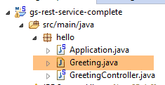 |
package hello;
public class Greeting {
private final long id;
private final String content;
public Greeting(long id, String content) {
this.id = id;
this.content = content;
}
public long getId() {
return id;
}
public String getContent() {
return content;
}
}
The JSON transformation of this object will create the string {"id":n,"content":"text"}. Ultimately, the JSON string produced by the controller method will be in the form:
or
2.11.6. Project Configuration
 |
The project is configured by the following [Application] class:
package hello;
import org.springframework.boot.autoconfigure.EnableAutoConfiguration;
import org.springframework.boot.SpringApplication;
import org.springframework.context.annotation.ComponentScan;
@ComponentScan
@EnableAutoConfiguration
public class Application {
public static void main(String[] args) {
SpringApplication.run(Application.class, args);
}
}
- Line 11: Interestingly, this class is executable with a [main] method specific to console applications. This is indeed the case. The [SpringApplication] class on line 12 will start the Tomcat server present in the dependencies and deploy the REST service on it;
- line 4: we can see that the [SpringApplication] class belongs to the [Spring Boot] project;
- line 12: the first parameter is the class that configures the project, the second contains any additional parameters;
- line 8: the [@EnableAutoConfiguration] annotation instructs Spring Boot to configure the project;
- line 7: the [@ComponentScan] annotation causes the directory containing the [Application] class to be scanned for Spring components. One will be found: the [GreetingController] class, which has the [@Controller] annotation, making it a Spring component;
2.11.7. Running the project
Let’s run the project:
 |
We get the following console logs:
____ _ __ _ _
/\\ / ___'_ __ _ _(_)_ __ __ _ \ \ \ \
( ( )\___ | '_ | '_| | '_ \/ _` | \ \ \ \
\\/ ___)| |_)| | | | | || (_| | ) ) ) )
' |____| .__|_| |_|_| |_\__, | / / / /
=========|_|==============|___/=/_/_/_/
:: Spring Boot :: (v1.1.0.RELEASE)
2014-06-11 14:31:36.435 INFO 11744 --- [ main] hello.Application : Starting Application on Gportpers3 with PID 11744 (D:\Temp\wksSTS\gs-rest-service-complete\target\classes started by ST in D:\Temp\wksSTS\gs-rest-service-complete)
2014-06-11 14:31:36.473 INFO 11744 --- [ main] ationConfigEmbeddedWebApplicationContext: Refreshing org.springframework.boot.context.embedded.AnnotationConfigEmbeddedWebApplicationContext@7684af0b: startup date [Wed Jun 11 14:31:36 CEST 2014]; root of context hierarchy
2014-06-11 14:31:36.966 INFO 11744 --- [ main] o.s.b.f.s.DefaultListableBeanFactory : Overriding bean definition for bean 'beanNameViewResolver': replacing [Root bean: class [null]; scope=; abstract=false; lazyInit=false; autowireMode=3; dependencyCheck=0; autowireCandidate=true; primary=false; factoryBeanName=org.springframework.boot.autoconfigure.web.ErrorMvcAutoConfiguration$WhitelabelErrorViewConfiguration; factoryMethodName=beanNameViewResolver; initMethodName=null; destroyMethodName=(inferred); defined in class path resource [org/springframework/boot/autoconfigure/web/ErrorMvcAutoConfiguration$WhitelabelErrorViewConfiguration.class]] with [Root bean: class [null]; scope=; abstract=false; lazyInit=false; autowireMode=3; dependencyCheck=0; autowireCandidate=true; primary=false; factoryBeanName=org.springframework.boot.autoconfigure.web.WebMvcAutoConfiguration$WebMvcAutoConfigurationAdapter; factoryMethodName=beanNameViewResolver; initMethodName=null; destroyMethodName=(inferred); defined in class path resource [org/springframework/boot/autoconfigure/web/WebMvcAutoConfiguration$WebMvcAutoConfigurationAdapter.class]]
2014-06-11 14:31:37.760 INFO 11744 --- [ main] .t.TomcatEmbeddedServletContainerFactory : Server initialized with port: 8080
2014-06-11 14:31:37.955 INFO 11744 --- [ main] o.apache.catalina.core.StandardService : Starting Tomcat service
2014-06-11 14:31:37.956 INFO 11744 --- [ main] org.apache.catalina.core.StandardEngine : Starting Servlet Engine: Apache Tomcat/7.0.54
2014-06-11 14:31:38.053 INFO 11744 --- [ost-startStop-1] o.a.c.c.C.[Tomcat].[localhost].[/] : Initializing Spring embedded WebApplicationContext
2014-06-11 14:31:38.054 INFO 11744 --- [ost-startStop-1] o.s.web.context.ContextLoader : Root WebApplicationContext: initialization completed in 1584 ms
2014-06-11 14:31:38.596 INFO 11744 --- [ost-startStop-1] o.s.b.c.e.ServletRegistrationBean : Mapping servlet: 'dispatcherServlet' to [/]
2014-06-11 14:31:38.598 INFO 11744 --- [ost-startStop-1] o.s.b.c.embedded.FilterRegistrationBean : Mapping filter: 'hiddenHttpMethodFilter' to: [/*]
2014-06-11 14:31:38.919 INFO 11744 --- [ main] o.s.w.s.handler.SimpleUrlHandlerMapping : Mapped URL path [/**/favicon.ico] onto handler of type [class org.springframework.web.servlet.resource.ResourceHttpRequestHandler]
2014-06-11 14:31:39.125 INFO 11744 --- [ main] s.w.s.m.m.a.RequestMappingHandlerMapping : Mapped "{[/greeting],methods=[],params=[],headers=[],consumes=[],produces=[],custom=[]}" onto public hello.Greeting hello.GreetingController.greeting(java.lang.String)
2014-06-11 14:31:39.129 INFO 11744 --- [ main] s.w.s.m.m.a.RequestMappingHandlerMapping : Mapped "{[/error],methods=[],params=[],headers=[],consumes=[],produces=[],custom=[]}" onto public org.springframework.http.ResponseEntity<java.util.Map<java.lang.String, java.lang.Object>> org.springframework.boot.autoconfigure.web.BasicErrorController.error(javax.servlet.http.HttpServletRequest)
2014-06-11 14:31:39.130 INFO 11744 --- [ main] s.w.s.m.m.a.RequestMappingHandlerMapping : Mapped "{[/error],methods=[],params=[],headers=[],consumes=[],produces=[text/html],custom=[]}" onto public org.springframework.web.servlet.ModelAndView org.springframework.boot.autoconfigure.web.BasicErrorController.errorHtml(javax.servlet.http.HttpServletRequest)
2014-06-11 14:31:39.160 INFO 11744 --- [ main] o.s.w.s.handler.SimpleUrlHandlerMapping : Mapped URL path [/**] onto handler of type [class org.springframework.web.servlet.resource.ResourceHttpRequestHandler]
2014-06-11 14:31:39.160 INFO 11744 --- [ main] o.s.w.s.handler.SimpleUrlHandlerMapping : Mapped URL path [/webjars/**] onto handler of type [class org.springframework.web.servlet.resource.ResourceHttpRequestHandler]
2014-06-11 14:31:39.448 INFO 11744 --- [ main] o.s.j.e.a.AnnotationMBeanExporter : Registering beans for JMX exposure on startup
2014-06-11 14:31:39.490 INFO 11744 --- [ main] s.b.c.e.t.TomcatEmbeddedServletContainer : Tomcat started on port(s): 8080/http
2014-06-11 14:31:39.492 INFO 11744 --- [ main] hello.Application : Started Application in 3.45 seconds (JVM running for 3.93)
- line 12: the Tomcat server starts on port 8080 (line 11);
- line 16: the [DispatcherServlet] servlet is present;
- line 19: the method [GreetingController.greeting] has been discovered;
To test the web application, we request the URL [http://localhost:8080/greeting]:
 |  |
We receive the expected JSON string. It may be interesting to view the HTTP headers sent by the server. To do this, we will use the Chrome plugin called [Advanced Rest Client] (see Appendices):
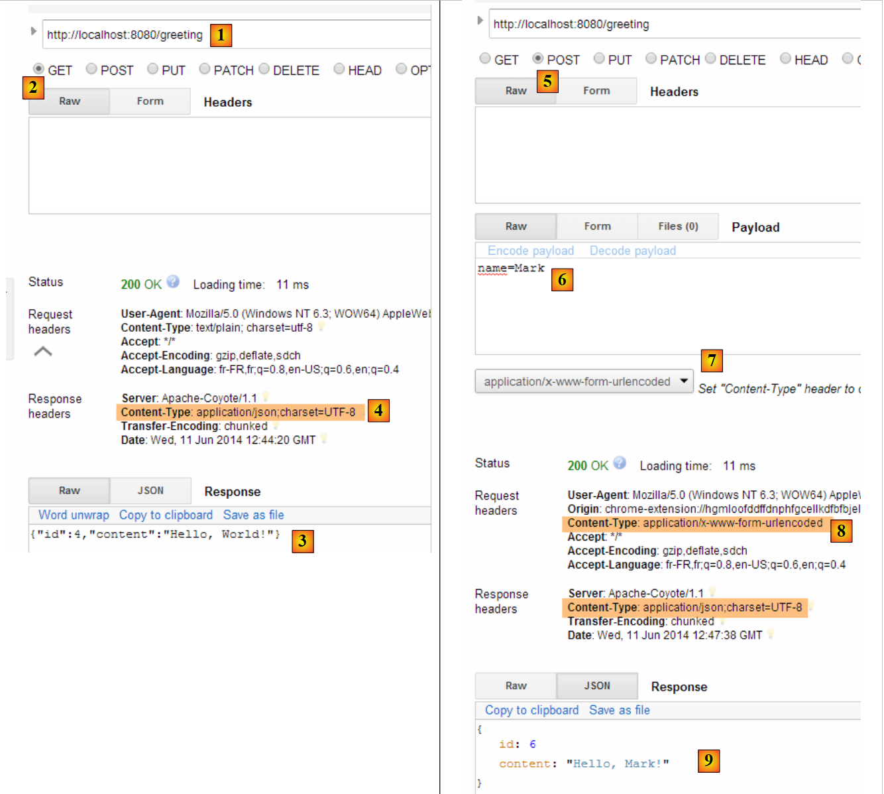 |
- in [1], the requested URL;
- in [2], the GET method is used;
- in [3], the JSON response;
- in [4], the server indicated that it was sending a response in JSON format;
- in [5], we request the same URL but this time using a POST request;
- in [7], the information is sent to the server in [urlencoded] format;
- in [6], the name parameter with its value;
- in [8], the browser tells the server that it is sending [urlencoded] information;
- in [9], the server's JSON response;
2.11.8. Creating an executable archive
It is possible to create an executable archive outside of Eclipse. The necessary configuration is in the [pom.xml] file:
<properties>
<project.build.sourceEncoding>UTF-8</project.build.sourceEncoding>
<start-class>istia.st.Application</start-class>
<java.version>1.7</java.version>
</properties>
<build>
<plugins>
<plugin>
<groupId>org.springframework.boot</groupId>
<artifactId>spring-boot-maven-plugin</artifactId>
</plugin>
</plugins>
</build>
- Lines 9–12 define the plugin that will create the executable archive;
- Line 3 defines the project's executable class;
Here’s how to proceed:
 |
- in [1]: execute a Maven goal;
- in [2]: there are two goals: [clean] to delete the [target] folder from the Maven project, [package] to regenerate it;
- in [3]: the generated [target] folder will be located in this folder;
- in [4]: the target is generated;
In the logs that appear in the console, it is important to see the [spring-boot-maven-plugin] plugin. This is the plugin that generates the executable archive.
Using a console, navigate to the generated folder:
- line 5: the generated archive;
This archive is executed as follows:
Now that the web application is running, you can access it using a browser:
 |
2.11.9. Deploying the application on a Tomcat server
While Spring Boot is very convenient in development mode, it is likely that a production application will be deployed on a real Tomcat server. Here’s how to do it:
Modify the [pom.xml] file as follows:
<?xml version="1.0" encoding="UTF-8"?>
<project xmlns="http://maven.apache.org/POM/4.0.0" xmlns:xsi="http://www.w3.org/2001/XMLSchema-instance"
xsi:schemaLocation="http://maven.apache.org/POM/4.0.0 http://maven.apache.org/xsd/maven-4.0.0.xsd">
<modelVersion>4.0.0</modelVersion>
<groupId>org.springframework</groupId>
<artifactId>gs-rest-service</artifactId>
<version>0.1.0</version>
<packaging>war</packaging>
<parent>
<groupId>org.springframework.boot</groupId>
<artifactId>spring-boot-starter-parent</artifactId>
<version>1.1.0.RELEASE</version>
</parent>
<dependencies>
<dependency>
<groupId>org.springframework.boot</groupId>
<artifactId>spring-boot-starter-web</artifactId>
</dependency>
<dependency>
<groupId>com.fasterxml.jackson.core</groupId>
<artifactId>jackson-databind</artifactId>
</dependency>
<dependency>
<groupId>org.springframework.boot</groupId>
<artifactId>spring-boot-starter-tomcat</artifactId>
<scope>provided</scope>
</dependency>
</dependencies>
<properties>
<start-class>hello.Application</start-class>
</properties>
....
</project>
Changes need to be made in two places:
- line 9: you must specify that you are going to generate a WAR (Web Archive) file;
- Lines 26–30: You need to add a dependency on the [spring-boot-starter-tomcat] artifact. This artifact adds all Tomcat classes to the project’s dependencies;
- Line 29: This artifact is [provided], meaning that the corresponding archives will not be included in the generated WAR file. Instead, these archives will be located on the Tomcat server where the application will run;
You must also configure the web application. In the absence of a [web.xml] file, this is done using a class that extends [SpringBootServletInitializer]:
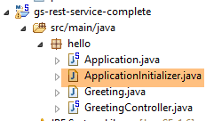 |
The [ApplicationInitializer] class is as follows:
package hello;
import org.springframework.boot.builder.SpringApplicationBuilder;
import org.springframework.boot.context.web.SpringBootServletInitializer;
public class ApplicationInitializer extends SpringBootServletInitializer {
@Override
protected SpringApplicationBuilder configure(SpringApplicationBuilder application) {
return application.sources(Application.class);
}
}
- line 6: the [ApplicationInitializer] class extends the [SpringBootServletInitializer] class;
- line 9: the [configure] method is overridden (line 8);
- line 10: the class that configures the project is provided;
To run the project, proceed as follows:
 |
- in [1], run the project on one of the servers registered in the Eclipse IDE;
- in [2], select [tc Server Developer], which is the default option. This is a variant of Tomcat;
Once this is done, you can enter the URL [http://localhost:8080/gs-rest-service/greeting/?name=Mitchell] in a browser:
 |
We now know how to generate a WAR archive. Moving forward, we will continue working with Spring Boot and its executable JAR archive.
2.11.10. Creating a new web project
To create a new web project, follow these steps:
 |
- in [1]: File / New / Spring Starter Project
- in [2]: select [Web]. Do not select any view libraries because in a web service / JSON, there are no views;
- The project created will be a Maven project. In [3], enter the group name for the Maven artifact to be created; in [4], enter the artifact name;
- in [5], enter the name of a package where Spring will place the project’s configuration class;
- in [6], give the Eclipse project a name—it may be different from [4];
 |
2.12. The [web] layer
 |
 |
We will build the web layer in several steps:
- Step 1: a functional web layer without authentication;
- Step 2: Implementing authentication with Spring Security;
- Step 3: Implementing CORS [Cross-origin resource sharing (CORS) is a mechanism that allows many resources (e.g., fonts, JavaScript, etc.) on a web page to be requested from another domain outside the domain the resource originated from. (Wikipedia)]. The client for our web service will be an Angular web client that does not necessarily belong to the same domain as our web service. By default, it cannot access the web service unless the web service authorizes it to do so. We will see how;
2.12.1. Maven Configuration
The project's [pom.xml] file is as follows:
<modelVersion>4.0.0</modelVersion>
<groupId>istia.st.spring4.mvc</groupId>
<artifactId>rdvmedecins-webapi-v1</artifactId>
<version>0.0.1-SNAPSHOT</version>
<name>rdvmedecins-webapi-v1</name>
<description>Doctor Appointment Management</description>
<parent>
<groupId>org.springframework.boot</groupId>
<artifactId>spring-boot-starter-parent</artifactId>
<version>1.0.0.RELEASE</version>
</parent>
<dependencies>
<dependency>
<groupId>org.springframework.boot</groupId>
<artifactId>spring-boot-starter-web</artifactId>
</dependency>
<dependency>
<groupId>istia.st.spring4.rdvmedecins</groupId>
<artifactId>rdvmedecins-metier-dao</artifactId>
<version>0.0.1-SNAPSHOT</version>
</dependency>
</dependencies>
- lines 7–11: the parent Maven project;
- lines 13–16: dependencies for a Spring MVC project;
- lines 17–21: dependencies on the [business logic, DAO, JPA] layers;
2.12.2. The web service interface
 |
- In [1] above, the browser can only request a limited number of URLs with a specific syntax;
- in [4], it receives a JSON response;
The responses from our web service will all have the same format, corresponding to the JSON representation of an object of type [Response] as follows:
package rdvmedecins.web.models;
public class Response {
// ----------------- properties
// operation status
private int status;
// the JSON response
private Object data;
// ---------------constructors
public Reponse() {
}
public Response(int status, Object data) {
this.status = status;
this.data = data;
}
// methods
public void incrStatusBy(int increment) {
status += increment;
}
// ----------------------getters and setters
...
}
- line 7: response error code 0: OK, anything else: KO;
- line 9: the response body;
We now present the screenshots illustrating the web service / JSON interface:
List of all patients at the medical practice [/getAllClients]
 |
List of all doctors at the medical practice [/getAllMedecins]
 |
List of a doctor’s available time slots [/getAllCreneaux/{idMedecin}]
 |
List of a doctor's appointments [/getRvMedecinJour/{idMedecin}/{yyyy-mm-dd}
 |
A doctor's daily schedule [/getAgendaMedecinJour/{idMedecin}/{yyyy-mm-dd}]
 |
To add or delete an appointment, we use the Chrome extension [Advanced Rest Client] because these operations are performed using a POST request.
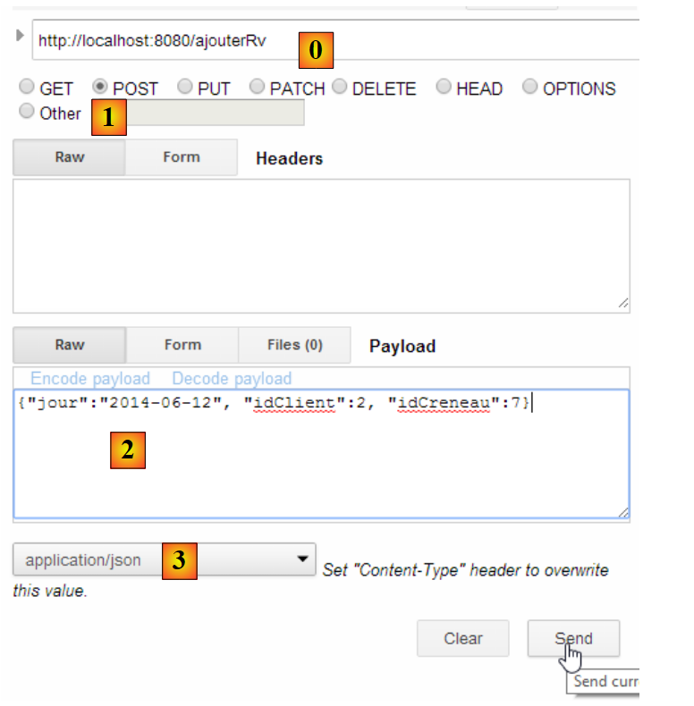 |
- in [0], the web service URL;
- in [1], the POST method is used;
- in [2], the JSON text of the information sent to the web service in the form {day, clientId, slotId};
- in [3], the client specifies to the web service that it is sending information in JSON format;
The response is then as follows:
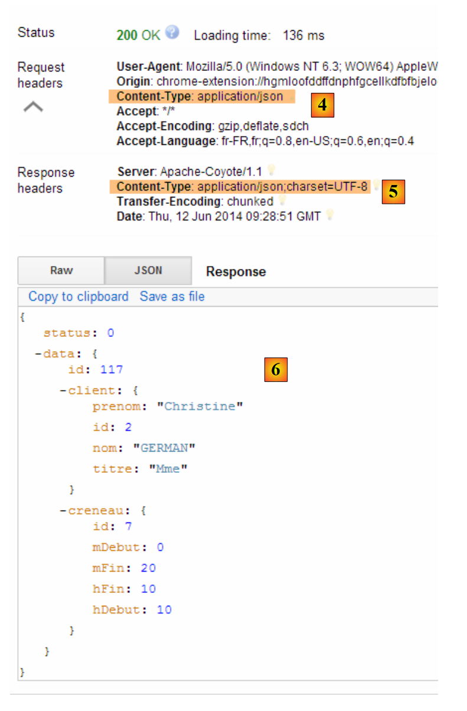 |
- in [4]: the client sends the header indicating that the data it is sending is in JSON format;
- in [5]: the web service responds that it is also sending JSON;
- in [6]: the web service’s JSON response. The [data] field contains the JSON representation of the added appointment;
The presence of the new appointment can be verified:
 |
Delete an appointment [/deleteApp]
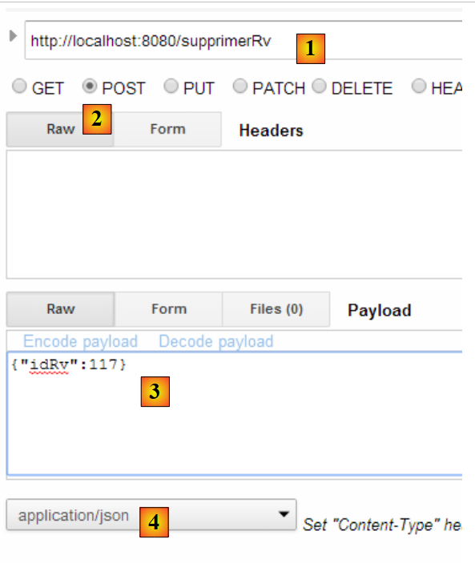 |
- in [1], the web service URL;
- in [2], the POST method is used;
- in [3], the JSON text of the information sent to the web service in the form {idRv};
- in [4], the client specifies to the web service that it is sending JSON data;
The response is then as follows:
 |
- in [5]: the [status] field is set to 0, indicating that the operation was successful;
The deletion of the appointment can be verified:
 |
As shown above, the appointment for the patient [Ms. GERMAN] is no longer listed.
The web service also allows you to retrieve entities by their ID:
 |
 |
 |
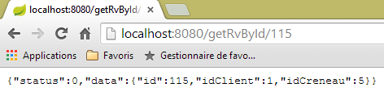 |
All these URLs are handled by the [RdvMedecinsController] controller, which we will now present.
2.12.3. The skeleton of the [ RdvMedecinsController] controller
 |
The [RdvMedecinsController] controller is as follows:
package rdvmedecins.web.controllers;
import java.text.ParseException;
...
@RestController
public class RdvMedecinsController {
@Autowired
private ApplicationModel application;
private List<String> messages;
@PostConstruct
public void init() {
// Application error messages
messages = application.getMessages();
}
// list of doctors
@RequestMapping(value = "/getAllDoctors", method = RequestMethod.GET)
public Response getAllDoctors() {
...
}
// list of clients
@RequestMapping(value = "/getAllClients", method = RequestMethod.GET)
public Response getAllClients() {
...
}
// list of a doctor's available slots
@RequestMapping(value = "/getAllSlots/{doctorId}", method = RequestMethod.GET)
public Response getAllSlots(@PathVariable("doctorId") long doctorId) {
...
}
// list of a doctor's appointments
@RequestMapping(value = "/getRvMedecinJour/{idMedecin}/{jour}", method = RequestMethod.GET)
public Response getDoctorAppointmentsByDay(@PathVariable("doctorId") long doctorId,
@PathVariable("day") String day) {
...
}
@RequestMapping(value = "/getClientById/{id}", method = RequestMethod.GET)
public Reponse getClientById(@PathVariable("id") long id) {
...
}
@RequestMapping(value = "/getMedecinById/{id}", method = RequestMethod.GET)
public Response getDoctorById(@PathVariable("id") long id) {
...
}
@RequestMapping(value = "/getRvById/{id}", method = RequestMethod.GET)
public Response getRvById(@PathVariable("id") long id) {
...
}
@RequestMapping(value = "/getCreneauById/{id}", method = RequestMethod.GET)
public Response getCreneauById(@PathVariable("id") long id) {
...
}
@RequestMapping(value = "/addAppointment", method = RequestMethod.POST, consumes = "application/json; charset=UTF-8")
public Response addAppointment(@RequestBody PostAddAppointment post) {
...
}
@RequestMapping(value = "/deleteAppointment", method = RequestMethod.POST, consumes = "application/json; charset=UTF-8")
public Response deleteAppointment(@RequestBody PostDeleteAppointment post) {
...
}
@RequestMapping(value = "/getAgendaMedecinJour/{idMedecin}/{jour}", method = RequestMethod.GET)
public Response getDoctorScheduleDay(
@PathVariable("doctorId") long doctorId,
@PathVariable("day") String day) {
...
}
}
- line 6: the [@RestController] annotation makes the [RdvMedecinsController] class a Spring controller. Additionally, it ensures that methods handling URLs will generate a response that is automatically converted to JSON;
- lines 9–10: An object of type [ApplicationModel] will be injected here by Spring;
- line 13: the [@PostConstruct] annotation marks a method to be executed immediately after the class is instantiated. When this method runs, the objects injected by Spring are available;
- All methods return an object of type [Response] as follows:
package rdvmedecins.web.models;
public class Response {
// ----------------- properties
// operation status
private int status;
// the response
private Object data;
...
}
This object is serialized into JSON before being sent to the client browser;
- line 20: the [@RequestMapping] annotation sets the conditions for calling the method. Here, the method handles a GET request from the URL [/getAllMedecins]. If this URL were requested via a POST, it would be rejected and Spring MVC would send an HTTP error code to the web client;
- line 32: the URL is configured with {idMedecin}. This parameter is retrieved using the [@PathVariable] annotation on line 33;
- line 33: the single parameter [long idMedecin] receives its value from the {idMedecin} parameter in the URL [@PathVariable("idMedecin")]. The parameter in the URL and the one in the method may have different names. Note that [@PathVariable("idMedecin")] is of type String (the entire URL is a String), whereas the parameter [long idMedecin] is of type [long]. The type conversion is performed automatically. An HTTP error code is returned if this type conversion fails;
- line 65: the [@RequestBody] annotation refers to the request body. In a GET request, there is almost never a body (but it is possible to include one). In a POST request, there usually is one (but it is possible to omit it). For the URL [ajouterRv], the web client sends the following JSON string in its POST:
The syntax [@RequestBody PostAjouterRv post] (line 65), combined with the fact that the method expects JSON [consumes = "application/json; charset=UTF-8"] (line 64), will cause the JSON string sent by the web client to be deserialized into an object of type [PostAjouter]. This object is defined as follows:
package rdvmedecins.web.models;
public class PostAjouterRv {
// post data
private String day;
private long clientId;
private long slotId;
// getters and setters
...
}
Here too, the necessary type conversions will occur automatically;
- Lines 69–70 contain a similar mechanism for the URL [/deleteRv]. The posted JSON string is as follows:
and the [PostSupprimerRv] type is as follows:
package rdvmedecins.web.models;
public class PostSupprimerRv {
// post data
private long idRv;
// getters and setters
...
}
2.12.4. Web service models
 |
We have already introduced the [Response, PostAddAppointment, PostDeleteAppointment] models. The [ApplicationModel] model is as follows:
package rdvmedecins.web.models;
import java.util.Date;
...
@Component
public class ApplicationModel implements IMetier {
// the [business] layer
@Autowired
private IMetier business;
// data from the [business] layer
private List<Doctor> doctors;
private List<Client> clients;
// error messages
private List<String> messages;
@PostConstruct
public void init() {
// retrieve doctors and clients
try {
doctors = business.getAllDoctors();
clients = business.getAllClients();
} catch (Exception ex) {
messages = Static.getErrorsForException(ex);
}
}
// getter
public List<String> getMessages() {
return messages;
}
// ------------------------- [business] layer interface
@Override
public List<Client> getAllClients() {
return clients;
}
@Override
public List<Doctor> getAllDoctors() {
return doctors;
}
@Override
public List<Slot> getAllSlots(long doctorId) {
return department.getAllSlots(doctorId);
}
@Override
public List<Appointment> getDoctorAppointmentsForDay(long doctorId, Date day) {
return business.getDoctorAppointmentsForDay(doctorId, day);
}
@Override
public Client getClientById(long id) {
return business.getClientById(id);
}
@Override
public Doctor getDoctorById(long id) {
return business.getDoctorById(id);
}
@Override
public Appointment getAppointmentById(long id) {
return business.getRvById(id);
}
@Override
public Slot getSlotById(long id) {
return business.getTimeSlotById(id);
}
@Override
public Appointment addAppointment(Date date, Slot slot, Client client) {
return business.addRv(day, slot, client);
}
@Override
public void deleteAppointment(Appointment appointment) {
job.deleteRv(rv);
}
@Override
public AgendaMedecinJour getAgendaMedecinJour(long idMedecin, Date jour) {
return profession.getDoctorDailySchedule(doctorId, day);
}
}
- line 6: the [@Component] annotation makes the [ApplicationModel] class a Spring component. Like all Spring components seen so far (with the exception of @Controller), only a single object of this type will be instantiated (singleton);
- line 7: the [ApplicationModel] class implements the [IMetier] interface;
- lines 10–11: A reference to the [business] layer is injected by Spring;
- line 19: the [@PostConstruct] annotation ensures that the [init] method will be executed immediately after the [ApplicationModel] class is instantiated;
- lines 23–24: the lists of doctors and clients are retrieved from the [business] layer;
- line 26: if an exception occurs, we store the messages from the exception stack in the field on line 17;
The [ApplicationModel] class will serve two purposes:
- as a cache to store the lists of doctors and patients (clients);
- as a single interface for the controllers;
The architecture of the web layer evolves as follows:
 |
- in [2b], the methods of the controller(s) communicate with the [ApplicationModel] singleton;
This strategy provides flexibility in cache management. Currently, doctors’ appointment slots are not cached. To cache them, simply modify the [ApplicationModel] class. This has no impact on the controller, which will continue to use the [List<Creneau> getAllCreneaux(long idMedecin)] method as it did before. It is the implementation of this method in [ApplicationModel] that will be changed.
2.12.5. The Static Class
The [Static] class contains a set of static utility methods that have no "business" or "web" aspects:
 |
Its code is as follows:
package rdvmedecins.web.helpers;
import java.text.SimpleDateFormat;
...
public class Static {
public Static() {
}
// list of error messages for an exception
public static List<String> getErrorsForException(Exception exception) {
// retrieve the list of error messages for the exception
Throwable cause = exception;
List<String> errors = new ArrayList<String>();
while (cause != null) {
errors.add(cause.getMessage());
cause = cause.getCause();
}
return errors;
}
// mappers Object --> Map
// --------------------------------------------------------
....
}
- line 12: the [Static.getErrorsForException] method that was used (line 8 below) in the [init] method of the [ApplicationModel] class:
@PostConstruct
public void init() {
// retrieve the doctors and clients
try {
doctors = business.getAllDoctors();
clients = business.getAllClients();
} catch (Exception ex) {
messages = Static.getErrorsForException(ex);
}
}
The method constructs a [List<String>] object containing the error messages [exception.getMessage()] of an exception [exception] and those of its inner exceptions [exception.getCause()].
The [Static] class contains other utility methods that we will revisit when we encounter them.
We will now detail the handling of the web service's URLs. Three main classes are involved in this process:
- the controller [RdvMedecinsController];
- the utility methods class [Static];
- the cache class [ApplicationModel];
 |
2.12.6. The [init] method of the controller
The [RdvMedecinsController] controller (see section 2.12.3) has an [init] method that is executed immediately after it is instantiated:
@Autowired
private ApplicationModel application;
private List<String> messages;
@PostConstruct
public void init() {
// Application error messages
messages = application.getMessages();
}
- Line 8: The error messages stored in the application cache [ApplicationModel] are saved locally in the field on line 3. This allows the methods to determine whether the application has initialized correctly.
2.12.7. The URL [/getAllMedecins]
The URL [/getAllDoctors] is handled by the following method in the controller [RdvMedecinsController]:
// list of doctors
@RequestMapping(value = "/getAllMedecins", method = RequestMethod.GET)
public Response getAllDoctors() {
// application status
if (messages != null) {
return new Response(-1, messages);
}
// list of doctors
try {
return new Response(0, application.getAllDoctors());
} catch (Exception e) {
return new Response(1, Static.getErrorsForException(e));
}
}
- line 5: we check if the application has initialized correctly (messages == null). If not, we return a response with status = -1 and data = messages;
- line 10: otherwise, we return the list of doctors with a status equal to 0. The method [application.getAllMedecins()] does not throw an exception because it simply returns a cached list. Nevertheless, we will keep this exception handling in case the doctors are no longer cached;
We have not yet illustrated the case where the application failed to initialize properly. Let’s stop the MySQL5 DBMS, start the web service, and then request the URL [/getAllMedecins]:

We do indeed get an error. Under normal circumstances, we get the following view:
|
2.12.8. The URL [/getAllClients]
The URL [/getAllClients] is handled by the following method in the [RdvMedecinsController]:
// list of clients
@RequestMapping(value = "/getAllClients")
public Response getAllClients() {
// application status
if (messages != null) {
return new Response(-1, messages);
}
// list of clients
try {
return new Response(0, application.getAllClients());
} catch (Exception e) {
return new Response(1, Static.getErrorsForException(e));
}
}
It is similar to the [getAllMedecins] method we already studied. The results obtained are as follows:
|
2.12.9. The URL [/getAllSlots/{doctorId}]
The URL [/getAllSlots/{doctorId}] is handled by the following method in the [RdvMedecinsController] controller:
// list of a doctor's time slots
@RequestMapping(value = "/getAllSlots/{doctorId}", method = RequestMethod.GET)
public Response getAllSlots(@PathVariable("doctorId") long doctorId) {
// Application state
if (messages != null) {
return new Response(-1, messages);
}
// retrieve the doctor
Response response = getDoctor(doctorId);
if (response.getStatus() != 0) {
return response;
}
Doctor doctor = (Doctor) response.getData();
// doctor's time slots
List<Slot> slots = null;
try {
slots = application.getAllSlots(doctor.getId());
} catch (Exception e1) {
return new Response(3, Static.getErrorsForException(e1));
}
// return the response
return new Response(0, Static.getListMapForSlots(slots));
}
- line 9: the doctor identified by the [id] parameter is requested from a local method:
private Response getDoctor(long id) {
// retrieve the doctor
Doctor doctor = null;
try {
doctor = application.getDoctorById(id);
} catch (Exception e1) {
return new Response(1, Static.getErrorsForException(e1));
}
// Does the doctor exist?
if (doctor == null) {
return new Response(2, null);
}
// ok
return new Response(0, doctor);
}
This method returns a status value in the range [0,1,2]. Let’s go back to the code for the [getAllSlots] method:
- lines 10–12: if status ≠ 0, return the response immediately;
- line 13: we retrieve the doctor;
- line 17: retrieve this doctor’s time slots;
- line 22: we return an object [Static.getListMapForCreneaux(slots)] as the response;
Let’s review the definition of the [Creneau] class:
@Entity
@Table(name = "slots")
public class Slot extends AbstractEntity {
private static final long serialVersionUID = 1L;
// characteristics of an appointment slot
private int startTime;
private int startMinute;
private int endHour;
private int endMin;
// A time slot is linked to a doctor
@ManyToOne(fetch = FetchType.LAZY)
@JoinColumn(name = "id_doctor")
private Doctor doctor;
// foreign key
@Column(name = "doctor_id", insertable = false, updatable = false)
private long doctorId;
...
}
- line 13: the doctor is fetched in [FetchType.LAZY] mode;
Recall the JPQL query that implements the [getAllCreneaux] method in the [DAO] layer:
@Query("select c from Creneau c where c.medecin.id=?1")
The notation [c.medecin.id] forces a join between the [CRENEAUX] and [MEDECINS] tables. As a result, the query returns all of the doctor’s appointment slots, with the doctor included in each one. When we serialize these slots into JSON, the doctor’s JSON string appears in each one. This is unnecessary. So rather than serializing a [Creneau] object, we will serialize a [Map] object containing only the desired fields.
Let’s go back to the code we looked at earlier:
// return the response
return new Response(0, Static.getListMapForSlots(slots));
The [Static.getListMapForCreneaux] method is as follows:
// List<Creneau> --> List<Map>
public static List<Map<String, Object>> getListMapForCreneaux(List<Creneau> créneaux) {
// list of <String, Object> dictionaries
List<Map<String, Object>> list = new ArrayList<Map<String, Object>>();
for (Creneau slot : slots) {
list.add(Static.getMapForCreneau(slot));
}
// return the list
return list;
}
and the [Static.getMapForCreneau] method is as follows:
// Slot --> Map
public static Map<String, Object> getMapForCreneau(Creneau slot) {
// anything to do?
if (slot == null) {
return null;
}
// <String, Object> dictionary
Map<String, Object> hash = new HashMap<String, Object>();
hash.put("id", slot.getId());
hash.put("hStart", slot.getHstart());
hash.put("mStart", slot.getMStart());
hash.put("hEnd", slot.getHend());
hash.put("mEnd", slot.getMend());
// return the dictionary
return hash;
}
- line 8: we create a dictionary;
- lines 9–13: we add the fields we want to keep in the JSON string. The [doctor] field is not included;
- line 15: return this dictionary;
The results obtained are as follows:
|
or these if the time slot does not exist:
 |
or these in case of an error accessing the database:
 |
2.12.10. The URL [/getRvMedecinJour/{idMedecin}/{jour}]
The URL [/getRvMedecinJour/{idMedecin}/{jour}] is handled by the following method in the [RdvMedecinsController] controller:
// list of a doctor's appointments
@RequestMapping(value = "/getRvMedecinJour/{idMedecin}/{jour}", method = RequestMethod.GET)
public Reponse getRvMedecinJour(@PathVariable("idMedecin") long idMedecin, @PathVariable("jour") String jour) {
// application state
if (messages != null) {
return new Response(-1, messages);
}
// check the date
Date calendarDate = null;
SimpleDateFormat sdf = new SimpleDateFormat("yyyy-MM-dd");
sdf.setLenient(false);
try {
calendarDay = sdf.parse(day);
} catch (ParseException e) {
return new Response(3, null);
}
// retrieve the doctor
Response response = getDoctor(doctorId);
if (response.getStatus() != 0) {
return response;
}
Doctor doctor = (Doctor) response.getData();
// list of their appointments
List<Appointment> appointments = null;
try {
rvs = application.getDoctorAppointment(doctor.getId(), calendarDay);
} catch (Exception e1) {
return new Response(4, Static.getErrorsForException(e1));
}
// return the response
return new Response(0, Static.getListMapForRvs(rvs));
}
- Line 31: We return a List<Map<String, Object>> object instead of a List<Rv> object. Recall the definition of the [Rv] class:
@Entity
@Table(name = "rv")
public class Rv extends AbstractEntity {
private static final long serialVersionUID = 1L;
// characteristics of an Rv
@Temporal(TemporalType.DATE)
private Date day;
// An Rv is associated with a client
@ManyToOne(fetch = FetchType.LAZY)
@JoinColumn(name = "id_client")
private Client client;
// A reservation is linked to a time slot
@ManyToOne(fetch = FetchType.LAZY)
@JoinColumn(name = "slot_id")
private Slot slot;
// foreign keys
@Column(name = "id_client", insertable = false, updatable = false)
private long clientId;
@Column(name = "id_slot", insertable = false, updatable = false)
private long slotId;
...
}
- line 11: the client is retrieved using the [FetchType.LAZY] mode;
- line 18: the slot is retrieved using the [FetchType.LAZY] mode;
Let’s recall the JPQL query that retrieves the appointments:
@Query("select rv from Rv rv left join fetch rv.client c left join fetch rv.creneau cr where cr.medecin.id=?1 and rv.jour=?2")
Joins are performed explicitly to retrieve the [client] and [creneau] fields. Furthermore, because of the join [cr.medecin.id=?1], we will also have the doctor. The doctor will therefore appear in the JSON string for each appointment. However, this duplicated information is unnecessary. Let’s return to the method’s code:
- line 31: we construct the dictionary to be serialized into JSON ourselves;
The dictionary constructed for an appointment is as follows:
// Rv --> Map
public static Map<String, Object> getMapForRv(Rv rv) {
// something to do?
if (rv == null) {
return null;
}
// <String, Object> dictionary
Map<String, Object> hash = new HashMap<String, Object>();
hash.put("id", rv.getId());
hash.put("client", rv.getClient());
hash.put("slot", getMapForSlot(rv.getSlot()));
// return the map
return hash;
}
- Line 11: We retrieve the dictionary from the [Creneau] object that we presented earlier;
The results obtained are as follows:
|
or these with an incorrect day:
 |
or these with an incorrect doctor:
 |
2.12.11. The URL [/getAgendaMedecinJour/{idMedecin}/{jour}]
The URL [/getAgendaMedecinJour/{idMedecin}/{jour}] is handled by the following method in the [RdvMedecinsController] controller:
@RequestMapping(value = "/getAgendaMedecinJour/{idMedecin}/{jour}", method = RequestMethod.GET)
public Reponse getAgendaMedecinJour(@PathVariable("idMedecin") long idMedecin, @PathVariable("jour") String jour) {
// application state
if (messages != null) {
return new Response(-1, messages);
}
// check the date
Date calendarDay = null;
SimpleDateFormat sdf = new SimpleDateFormat("yyyy-MM-dd");
sdf.setLenient(false);
try {
day = sdf.parse(day);
} catch (ParseException e) {
return new Response(3, new String[] { String.format("Invalid date [%s]", date) });
}
// retrieve the doctor
Response response = getDoctor(doctorId);
if (response.getStatus() != 0) {
return response;
}
Doctor doctor = (Doctor) response.getData();
// retrieve their schedule
Doctor'sDailySchedule schedule = null;
try {
agenda = application.getDoctorDailySchedule(doctor.getId(), scheduleDay);
} catch (Exception e1) {
return new Response(4, Static.getErrorsForException(e1));
}
// ok
return new Response(0, Static.getMapForDoctorScheduleDay(schedule));
}
}
- Line 30 returns an object of type List<Map<String, Object>>.
The method [Static.getMapForAgendaMedecinJour] is as follows:
// AgendaMedecinJour --> Map
public static Map<String, Object> getMapForAgendaMedecinJour(AgendaMedecinJour agenda) {
// something to do?
if (agenda == null) {
return null;
}
// <String, Object> dictionary
Map<String, Object> hash = new HashMap<String, Object>();
hash.put("doctor", agenda.getDoctor());
hash.put("day", new SimpleDateFormat("yyyy-MM-dd").format(agenda.getDay()));
List<Map<String, Object>> slots = new ArrayList<Map<String, Object>>();
for (DoctorDaySlot slot : calendar.getDoctorDaySlots()) {
slots.add(getMapForDoctorDaySlot(slot));
}
hash.put("doctorSlots", slots);
// return the dictionary
return hash;
}
The constructed dictionary has three fields:
- [doctor]: the doctor who owns the schedule. We kept this information because it appears only once, whereas in previous cases, it was repeated in every JSON string;
- [day]: the day of the calendar;
- [doctorSlots]: the list of the doctor’s available slots, including any appointments scheduled for that slot;
The [getMapForCreneauMedecinJour] method used on line 13 is as follows:
// DoctorSlotDay --> map
public static Map<String, Object> getMapForCreneauMedecinJour(CreneauMedecinJour slot) {
// something to do?
if (slot == null) {
return null;
}
// <String, Object> dictionary
Map<String, Object> hash = new HashMap<String, Object>();
hash.put("slot", getMapForSlot(slot.getSlot()));
hash.put("rv", getMapForRv(slot.getRv()));
// return the map
return hash;
}
- lines 9-10: we use the dictionaries already discussed for the [Creneau] and [Rv] types, which therefore do not contain any [Medecin] objects;
The results obtained are as follows:
|
or these if the day is incorrect:
 |
or these if the doctor's ID is invalid:
 |
2.12.12. The URL [/getMedecinById/{id}]
The URL [/getMedecinById/{id}] is handled by the following method in the [RdvMedecinsController] controller:
@RequestMapping(value = "/getMedecinById/{id}", method = RequestMethod.GET)
public Reponse getMedecinById(@PathVariable("id") long id) {
// Application state
if (messages != null) {
return new Response(-1, messages);
}
// retrieve the doctor
return getDoctor(id);
}
Line 8, the [getMedecin] method is as follows:
private Reponse getDoctor(long id) {
// retrieve the doctor
Doctor doctor = null;
try {
doctor = application.getDoctorById(id);
} catch (Exception e1) {
return new Response(1, Static.getErrorsForException(e1));
}
// Does the doctor exist?
if (doctor == null) {
return new Response(2, null);
}
// OK
return new Response(0, doctor);
}
The results are as follows:
|
or these if the doctor's ID is incorrect:
 |
2.12.13. The URL [/getClientById/{id}]
The URL [/getClientById/{id}] is handled by the following method in the controller [RdvMedecinsController]:
@RequestMapping(value = "/getClientById/{id}", method = RequestMethod.GET)
public Reponse getClientById(@PathVariable("id") long id) {
// Application status
if (messages != null) {
return new Response(-1, messages);
}
// retrieve the client
return getClient(id);
}
Line 8, the [getClient] method is as follows:
private Reponse getClient(long id) {
// retrieve the client
Client client = null;
try {
client = application.getClientById(id);
} catch (Exception e1) {
return new Response(1, Static.getErrorsForException(e1));
}
// Does the client exist?
if (client == null) {
return new Response(2, null);
}
// ok
return new Response(0, client);
}
The results are as follows:
|
or these if the customer ID is incorrect:
 |
2.12.14. The URL [/getCreneauById/{id}]
The URL [/getCreneauById/{id}] is handled by the following method in the controller [RdvMedecinsController]:
@RequestMapping(value = "/getCreneauById/{id}", method = RequestMethod.GET)
public Reponse getCreneauById(@PathVariable("id") long id) {
// application state
if (messages != null) {
return new Response(-1, messages);
}
// retrieve the time slot
Response response = getSlot(id);
if (response.getStatus() == 0) {
response.setData(Static.getMapForCreneau((Creneau) response.getData()));
}
// result
return response;
}
Line 8, the [getCreneau] method is as follows:
private Response getTimeSlot(long id) {
// retrieve the slot
Creneau slot = null;
try {
slot = application.getCreneauById(id);
} catch (Exception e1) {
return new Response(1, Static.getErrorsForException(e1));
}
// Does the slot exist?
if (slot == null) {
return new Response(2, null);
}
// OK
return new Response(0, slot);
}
The results obtained are as follows:
|
or these if the slot number is incorrect:
 |
2.12.15. The URL [/getRvById/{id}]
The URL [/getRvById/{id}] is handled by the following method in the [RdvMedecinsController] controller:
@RequestMapping(value = "/getRvById/{id}", method = RequestMethod.GET)
public Reponse getRvById(@PathVariable("id") long id) {
// application state
if (messages != null) {
return new Response(-1, messages);
}
// retrieve the response
Response response = getRv(id);
if (response.getStatus() == 0) {
response.setData(Static.getMapForRv2((Rv) response.getData()));
}
// result
return response;
}
Line 8, the [getRv] method is as follows:
private Response getRv(long id) {
// retrieve the Rv
Rv rv = null;
try {
rv = application.getRvById(id);
} catch (Exception e1) {
return new Response(1, Static.getErrorsForException(e1));
}
// Does the RV exist?
if (rv == null) {
return new Response(2, null);
}
// OK
return new Response(0, rv);
}
Line 10, the [Static.getMapForRv2] method is as follows:
// Rv --> Map
public static Map<String, Object> getMapForRv2(Rv rv) {
// anything to do?
if (rv == null) {
return null;
}
// <String, Object> dictionary
Map<String, Object> hash = new HashMap<String, Object>();
hash.put("id", rv.getId());
hash.put("clientId", rv.getClientId());
hash.put("slotId", rv.getSlotId());
// return the map
return hash;
}
The results are as follows:
or these if the appointment ID is incorrect:
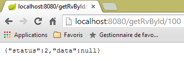 |
2.12.16. The URL [/ajouterRv]
The URL [/ajouterRv] is handled by the following method in the [RdvMedecinsController] controller:
@RequestMapping(value = "/ajouterRv", method = RequestMethod.POST, consumes = "application/json; charset=UTF-8")
public Reponse ajouterRv(@RequestBody PostAjouterRv post) {
// application state
if (messages != null) {
return new Response(-1, messages);
}
// retrieve the posted values
String day = post.getDay();
long slotId = post.getSlotId();
long clientId = post.getClientId();
// check the date
Date agendaDate = null;
SimpleDateFormat sdf = new SimpleDateFormat("yyyy-MM-dd");
sdf.setLenient(false);
try {
calendarDay = sdf.parse(day);
} catch (ParseException e) {
return new Response(6, null);
}
// retrieve the time slot
Response response = getSlot(slotId);
if (response.getStatus() != 0) {
return response;
}
TimeSlot timeSlot = (TimeSlot) response.getData();
// retrieve the client
response = getClient(clientId);
if (response.getStatus() != 0) {
response.incrStatusBy(2);
return response;
}
Client client = (Client) response.getData();
// add the Rv
Rv rv = null;
try {
rv = application.addRv(calendarDay, timeSlot, client);
} catch (Exception e1) {
return new Response(5, Static.getErrorsForException(e1));
}
// return the response
return new Response(0, Static.getMapForRv(rv));
}
There is nothing here that we haven't seen before. On line 41, we return the appointment that was added on line 36.
The results obtained look like this with the [Advanced Rest Client]:
 |
or like this if, for example, we provide a non-existent slot number:
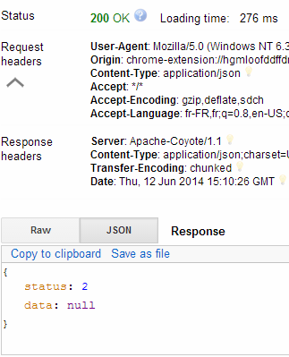 |
2.12.17. The URL [/deleteAppointment]
The URL [/deleteAppointment] is handled by the following method in the [RdvMedecinsController] controller:
@RequestMapping(value = "/deleteAppointment", method = RequestMethod.POST, consumes = "application/json; charset=UTF-8")
public Reponse deleteAppointment(@RequestBody PostDeleteAppointment post) {
// application state
if (messages != null) {
return new Response(-1, messages);
}
// retrieve the posted values
long idRv = post.getIdRv();
// Retrieve the RV
Response response = getRv(idRv);
if (response.getStatus() != 0) {
return response;
}
// delete the RV
try {
application.deleteRv(idRv);
} catch (Exception e1) {
return new Response(3, Static.getErrorsForException(e1));
}
// ok
return new Response(0, null);
}
The resulting s are as follows:
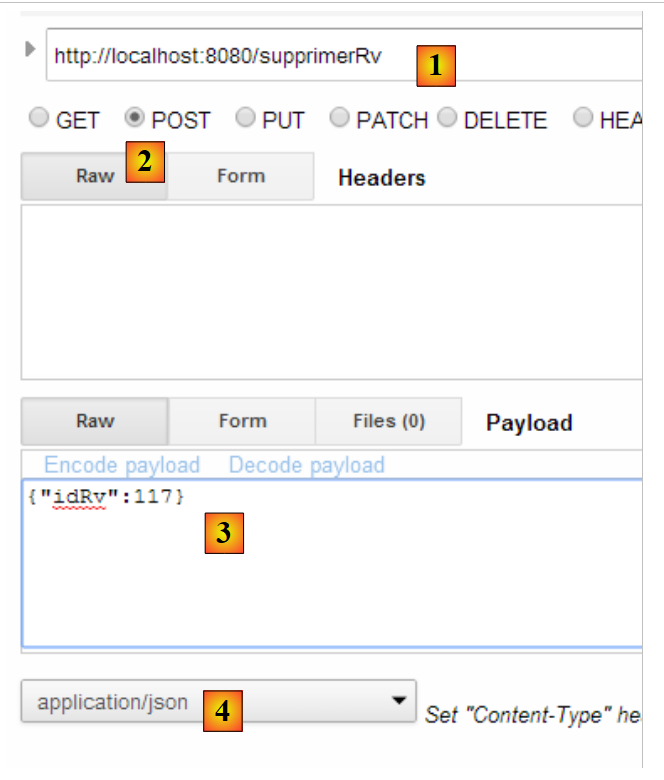 |
or these if the appointment ID does not exist:
 |
We are done with the controller. Now let’s see how to configure the project.
2.12.18. Web service configuration
 |
The configuration class [AppConfig] is as follows:
package rdvmedecins.web.config;
import org.springframework.boot.autoconfigure.EnableAutoConfiguration;
import org.springframework.context.annotation.ComponentScan;
import org.springframework.context.annotation.Import;
import rdvmedecins.config.DomainAndPersistenceConfig;
@EnableAutoConfiguration
@ComponentScan(basePackages = { "rdvmedecins.web" })
@Import({ DomainAndPersistenceConfig.class })
public class AppConfig {
}
- Line 9: We set the mode to [AutoConfiguration] so that Spring Boot can configure the project based on the files it finds in the project’s classpath;
- line 10: we specify that Spring components should be searched for in the [rdvmedecins.web] package and its subpackages. This is how the following components will be discovered:
- [@RestController RdvMedecinsController] in the [rdvmedecins.web.controllers] package;
- [@Component ApplicationModel] in the [rdvmedecins.web.models] package;
- Line 11: We import the [DomainAndPersistenceConfig] class, which configures the [rdvmedecins-metier-dao] project to provide access to that project’s beans;
2.12.19. The executable class of the web service
 |
The [Boot] class is as follows:
package rdvmedecins.web.boot;
import org.springframework.boot.SpringApplication;
import rdvmedecins.web.config.AppConfig;
public class Boot {
public static void main(String[] args) {
SpringApplication.run(AppConfig.class, args);
}
}
Line 10: The static method [SpringApplication.run] is executed with the project's configuration class [AppConfig] as its first parameter. This method will auto-configure the project, start the Tomcat server embedded in the dependencies, and deploy the [RdvMedecinsController] controller to it.
The logs during execution are as follows:
. ____ _ __ _ _
/\\ / ___'_ __ _ _(_)_ __ __ _ \ \ \ \
( ( )\___ | '_ | '_| | '_ \/ _` | \ \ \ \
\\/ ___)| |_)| | | | | || (_| | ) ) ) )
' |____| .__|_| |_|_| |_\__, | / / / /
=========|_|==============|___/=/_/_/_/
:: Spring Boot :: (v1.0.0.RELEASE)
2014-06-12 17:30:41.261 INFO 9388 --- [ main] rdvmedecins.web.boot.Boot : Starting Boot on Gportpers3 with PID 9388 (D:\data\istia-1314\polys\istia\angularjs-spring4\dvp\rdvmedecins-webapi\target\classes started by ST)
2014-06-12 17:30:41.306 INFO 9388 --- [ main] ationConfigEmbeddedWebApplicationContext : Refreshing org.springframework.boot.context.embedded.AnnotationConfigEmbeddedWebApplicationContext@a1e932e: startup date [Thu Jun 12 17:30:41 CEST 2014]; root of context hierarchy
2014-06-12 17:30:42.058 INFO 9388 --- [ main] o.s.b.f.s.DefaultListableBeanFactory : Overriding bean definition for bean 'org.springframework.boot.autoconfigure.AutoConfigurationPackages': replacing [Generic bean: class [org.springframework.boot.autoconfigure.AutoConfigurationPackages$BasePackages]; scope=; abstract=false; lazyInit=false; autowireMode=0; dependencyCheck=0; autowireCandidate=true; primary=false; factoryBeanName=null; factoryMethodName=null; initMethodName=null; destroyMethodName=null] with [Generic bean: class [org.springframework.boot.autoconfigure.AutoConfigurationPackages$BasePackages]; scope=; abstract=false; lazyInit=false; autowireMode=0; dependencyCheck=0; autowireCandidate=true; primary=false; factoryBeanName=null; factoryMethodName=null; initMethodName=null; destroyMethodName=null]
2014-06-12 17:30:42.866 INFO 9388 --- [ main] trationDelegate$BeanPostProcessorChecker : Bean 'org.springframework.transaction.annotation.ProxyTransactionManagementConfiguration' of type [class org.springframework.transaction.annotation.ProxyTransactionManagementConfiguration$$EnhancerBySpringCGLIB$$fd7a7b18] is not eligible for processing by all BeanPostProcessors (for example: not eligible for auto-proxying)
2014-06-12 17:30:42.900 INFO 9388 --- [ main] trationDelegate$BeanPostProcessorChecker : Bean 'transactionAttributeSource' of type [class org.springframework.transaction.annotation.AnnotationTransactionAttributeSource] is not eligible for processing by all BeanPostProcessors (for example: not eligible for auto-proxying)
2014-06-12 17:30:42.915 INFO 9388 --- [ main] trationDelegate$BeanPostProcessorChecker: Bean 'transactionInterceptor' of type [class org.springframework.transaction.interceptor.TransactionInterceptor] is not eligible for processing by all BeanPostProcessors (for example: not eligible for auto-proxying)
2014-06-12 17:30:42.920 INFO 9388 --- [ main] trationDelegate$BeanPostProcessorChecker: Bean 'org.springframework.transaction.config.internalTransactionAdvisor' of type [class org.springframework.transaction.interceptor.BeanFactoryTransactionAttributeSourceAdvisor] is not eligible for processing by all BeanPostProcessors (for example: not eligible for auto-proxying)
2014-06-12 17:30:43.164 INFO 9388 --- [ main] .t.TomcatEmbeddedServletContainerFactory : Server initialized with port: 8080
2014-06-12 17:30:43.403 INFO 9388 --- [ main] o.apache.catalina.core.StandardService : Starting Tomcat service
2014-06-12 17:30:43.403 INFO 9388 --- [ main] org.apache.catalina.core.StandardEngine : Starting Servlet Engine: Apache Tomcat/7.0.52
2014-06-12 17:30:43.582 INFO 9388 --- [ost-startStop-1] o.a.c.c.C.[Tomcat].[localhost].[/] : Initializing Spring embedded WebApplicationContext
2014-06-12 17:30:43.582 INFO 9388 --- [ost-startStop-1] o.s.web.context.ContextLoader : Root WebApplicationContext: initialization completed in 2279 ms
2014-06-12 17:30:44.117 INFO 9388 --- [ost-startStop-1] o.s.b.c.e.ServletRegistrationBean : Mapping servlet: 'dispatcherServlet' to [/]
2014-06-12 17:30:44.119 INFO 9388 --- [ost-startStop-1] o.s.b.c.embedded.FilterRegistrationBean : Mapping filter: 'hiddenHttpMethodFilter' to: [/*]
2014-06-12 17:30:44.662 INFO 9388 --- [ main] j.LocalContainerEntityManagerFactoryBean : Building JPA container EntityManagerFactory for persistence unit 'default'
2014-06-12 17:30:44.707 INFO 9388 --- [ main] o.hibernate.jpa.internal.util.LogHelper : HHH000204: Processing PersistenceUnitInfo [
name: default
...]
2014-06-12 17:30:44.839 INFO 9388 --- [ main] org.hibernate.Version : HHH000412: Hibernate Core {4.3.1.Final}
2014-06-12 17:30:44.842 INFO 9388 --- [ main] org.hibernate.cfg.Environment : HHH000206: hibernate.properties not found
2014-06-12 17:30:44.844 INFO 9388 --- [ main] org.hibernate.cfg.Environment : HHH000021: Bytecode provider name : javassist
2014-06-12 17:30:45.189 INFO 9388 --- [ main] o.hibernate.annotations.common.Version : HCANN000001: Hibernate Commons Annotations {4.0.4.Final}
2014-06-12 17:30:45.616 INFO 9388 --- [ main] org.hibernate.dialect.Dialect : HHH000400: Using dialect: org.hibernate.dialect.MySQLDialect
2014-06-12 17:30:45.783 INFO 9388 --- [ main] o.h.h.i.ast.ASTQueryTranslatorFactory : HHH000397: Using ASTQueryTranslatorFactory
2014-06-12 17:30:46.729 INFO 9388 --- [ main] o.s.w.s.handler.SimpleUrlHandlerMapping : Mapped URL path [/**/favicon.ico] onto handler of type [class org.springframework.web.servlet.resource.ResourceHttpRequestHandler]
2014-06-12 17:30:46.825 INFO 9388 --- [ main] s.w.s.m.m.a.RequestMappingHandlerMapping : Mapped "{[/getRvMedecinJour/{idMedecin}/{jour}],methods=[GET],params=[],headers=[],consumes=[],produces=[],custom=[]}" onto public rdvmedecins.web.models.Response rdvmedecins.web.controllers.RdvMedecinsController.getRvMedecinJour(long, java.lang.String)
2014-06-12 17:30:46.826 INFO 9388 --- [ main] s.w.s.m.m.a.RequestMappingHandlerMapping : Mapped "{[/getAllCreneaux/{idMedecin}],methods=[GET],params=[],headers=[],consumes=[],produces=[],custom=[]}" onto public rdvmedecins.web.models.Response rdvmedecins.web.controllers.RdvMedecinsController.getAllCreneaux(long)
2014-06-12 17:30:46.826 INFO 9388 --- [ main] s.w.s.m.m.a.RequestMappingHandlerMapping : Mapped "{[/getAgendaMedecinJour/{idMedecin}/{jour}],methods=[GET],params=[],headers=[],consumes=[],produces=[],custom=[]}" onto public rdvmedecins.web.models.Response rdvmedecins.web.controllers.RdvMedecinsController.getAgendaMedecinJour(long, java.lang.String)
2014-06-12 17:30:46.826 INFO 9388 --- [ main] s.w.s.m.m.a.RequestMappingHandlerMapping : Mapped "{[/getAllMedecins],methods=[GET],params=[],headers=[],consumes=[],produces=[],custom=[]}" onto public rdvmedecins.web.models.Response rdvmedecins.web.controllers.RdvMedecinsController.getAllMedecins()
2014-06-12 17:30:46.826 INFO 9388 --- [ main] s.w.s.m.m.a.RequestMappingHandlerMapping : Mapped "{[/getMedecinById/{id}],methods=[GET],params=[],headers=[],consumes=[],produces=[],custom=[]}" onto public rdvmedecins.web.models.Response rdvmedecins.web.controllers.RdvMedecinsController.getMedecinById(long)
2014-06-12 17:30:46.827 INFO 9388 --- [ main] s.w.s.m.m.a.RequestMappingHandlerMapping : Mapped "{[/getCreneauById/{id}],methods=[GET],params=[],headers=[],consumes=[],produces=[],custom=[]}" onto public rdvmedecins.web.models.Response rdvmedecins.web.controllers.RdvMedecinsController.getCreneauById(long)
2014-06-12 17:30:46.827 INFO 9388 --- [ main] s.w.s.m.m.a.RequestMappingHandlerMapping : Mapped "{[/getClientById/{id}],methods=[GET],params=[],headers=[],consumes=[],produces=[],custom=[]}" onto public rdvmedecins.web.models.Response rdvmedecins.web.controllers.RdvMedecinsController.getClientById(long)
2014-06-12 17:30:46.827 INFO 9388 --- [ main] s.w.s.m.m.a.RequestMappingHandlerMapping : Mapped "{[/getRvById/{id}],methods=[GET],params=[],headers=[],consumes=[],produces=[],custom=[]}" onto public rdvmedecins.web.models.Response rdvmedecins.web.controllers.RdvMedecinsController.getRvById(long)
2014-06-12 17:30:46.827 INFO 9388 --- [ main] s.w.s.m.m.a.RequestMappingHandlerMapping : Mapped "{[/getAllClients],methods=[],params=[],headers=[],consumes=[],produces=[],custom=[]}" onto public rdvmedecins.web.models.Response rdvmedecins.web.controllers.RdvMedecinsController.getAllClients()
2014-06-12 17:30:46.827 INFO 9388 --- [ main] s.w.s.m.m.a.RequestMappingHandlerMapping : Mapped "{[/ajouterRv],methods=[POST],params=[],headers=[],consumes=[application/json;charset=UTF-8],produces=[],custom=[]}" onto public rdvmedecins.web.models.Response rdvmedecins.web.controllers.RdvMedecinsController.addAppointment(rdvmedecins.web.models.PostAddAppointment)
2014-06-12 17:30:46.828 INFO 9388 --- [ main] s.w.s.m.m.a.RequestMappingHandlerMapping : Mapped "{[/supprimerRv],methods=[POST],params=[],headers=[],consumes=[application/json;charset=UTF-8],produces=[],custom=[]}" onto public rdvmedecins.web.models.Response rdvmedecins.web.controllers.RdvMedecinsController.deleteAppointment(rdvmedecins.web.models.PostDeleteAppointment)
2014-06-12 17:30:46.851 INFO 9388 --- [ main] o.s.w.s.handler.SimpleUrlHandlerMapping : Mapped URL path [/**] onto handler of type [class org.springframework.web.servlet.resource.ResourceHttpRequestHandler]
2014-06-12 17:30:46.851 INFO 9388 --- [ main] o.s.w.s.handler.SimpleUrlHandlerMapping : Mapped URL path [/webjars/**] onto handler of type [class org.springframework.web.servlet.resource.ResourceHttpRequestHandler]
2014-06-12 17:30:47.131 INFO 9388 --- [ main] o.s.j.e.a.AnnotationMBeanExporter : Registering beans for JMX exposure on startup
2014-06-12 17:30:47.169 INFO 9388 --- [ main] s.b.c.e.t.TomcatEmbeddedServletContainer : Tomcat started on port(s): 8080/http
2014-06-12 17:30:47.170 INFO 9388 --- [ main] rdvmedecins.web.boot.Boot : Started Boot in 6.302 seconds (JVM running for 6.906)
2014-06-12 17:30:55.520 INFO 9388 --- [nio-8080-exec-1] o.a.c.c.C.[Tomcat].[localhost].[/] : Initializing Spring FrameworkServlet 'dispatcherServlet'
2014-06-12 17:30:55.520 INFO 9388 --- [nio-8080-exec-1] o.s.web.servlet.DispatcherServlet : FrameworkServlet 'dispatcherServlet': initialization started
2014-06-12 17:30:55.538 INFO 9388 --- [nio-8080-exec-1] o.s.web.servlet.DispatcherServlet : FrameworkServlet 'dispatcherServlet': initialization completed in 18 ms
- line 17: the Tomcat server starts;
- lines 23-31: the [business logic, DAO, JPA] layers initialize;
- line 34: the method handling the URL [/getRvMedecinJour/{idMedecin}/{jour}] has been discovered. This process of discovering controller methods repeats until line 44;
- line 52: the Spring MVC servlet [DispatcherServlet] is ready to respond to requests from web clients;
We now have a working web service that can be queried by a web client. We will now address securing this service: we want only certain people to be able to manage doctors’ appointments. To do this, we will use the Spring Security framework, a component of the Spring ecosystem.
2.13. Introduction to Spring Security
We will once again import a Spring guide by following steps 1 through 3 below:
 |
 |
The project consists of the following elements:
- in the [templates] folder, you’ll find the project’s HTML pages;
- [Application]: is the project’s executable class;
- [MvcConfig]: is the Spring MVC configuration class;
- [WebSecurityConfig]: is the Spring Security configuration class;
2.13.1. Maven Configuration
Project [3] is a Maven project. Let’s examine its [pom.xml] file to see its dependencies:
<parent>
<groupId>org.springframework.boot</groupId>
<artifactId>spring-boot-starter-parent</artifactId>
<version>1.1.1.RELEASE</version>
</parent>
<dependencies>
<dependency>
<groupId>org.springframework.boot</groupId>
<artifactId>spring-boot-starter-thymeleaf</artifactId>
</dependency>
<dependency>
<groupId>org.springframework.boot</groupId>
<artifactId>spring-boot-starter-security</artifactId>
</dependency>
</dependencies>
- lines 1–5: the project is a Spring Boot project;
- lines 8–11: dependency on the [Thymeleaf] framework, which allows for the creation of dynamic HTML pages. This framework can replace JSP (Java Server Pages), which until recently were the default view framework for Spring MVC;
- lines 12–15: dependency on the Spring Security framework;
2.13.2. Thymeleaf Views
 |
The [home.html] view is as follows:
 |
<!DOCTYPE html>
<html xmlns="http://www.w3.org/1999/xhtml"
xmlns:th="http://www.thymeleaf.org"
xmlns:sec="http://www.thymeleaf.org/thymeleaf-extras-springsecurity3">
<head>
<title>Spring Security Example</title>
</head>
<body>
<h1>Welcome!</h1>
<p>
Click <a th:href="@{/hello}">here</a> to see a greeting.
</p>
</body>
</html>
- The [th:xx] attributes are Thymeleaf attributes. They are interpreted by Thymeleaf before the HTML page is sent to the client. The client does not see them;
- line 12: the [th:href="@{/hello}"] attribute will generate the [href] attribute of the <a> tag. The value [@{/hello}] will generate the path [<context>/hello], where [context] is the web application context;
The generated HTML code is as follows:
<!DOCTYPE html>
<html xmlns="http://www.w3.org/1999/xhtml" xmlns:sec="http://www.thymeleaf.org/thymeleaf-extras-springsecurity3">
<head>
<title>Spring Security Example</title>
</head>
<body>
<h1>Welcome!</h1>
<p>
Click <a href="/hello">here</a> to see a greeting.
</p>
</body>
</html>
- line 10: the application context is the root /;
The [hello.html] view is as follows:
 |
<!DOCTYPE html>
<html xmlns="http://www.w3.org/1999/xhtml"
xmlns:th="http://www.thymeleaf.org"
xmlns:sec="http://www.thymeleaf.org/thymeleaf-extras-springsecurity3">
<head>
<title>Hello World!</title>
</head>
<body>
<h1 th:inline="text">Hello [[${#httpServletRequest.remoteUser}]]!</h1>
<form th:action="@{/logout}" method="post">
<input type="submit" value="Sign Out" />
</form>
</body>
</html>
- line 9: The [th:inline="text"] attribute will generate the text of the <h1> tag. This text contains a $ expression that must be evaluated. The element [[${#httpServletRequest.remoteUser}]] is the value of the [RemoteUser] attribute of the current HTTP request. This is the name of the logged-in user;
- line 10: an HTML form. The [th:action="@{/logout}"] attribute will generate the [action] attribute of the [form] tag. The value [@{/logout}] will generate the path [<context>/logout], where [context] is the web application context;
The generated HTML code is as follows:
- line 8: the translation of Hello [[${#httpServletRequest.remoteUser}]]!;
- line 9: the translation of @{/logout};
- line 11: a hidden field named (name attribute) _csrf;
The final view [login.html] is as follows:
 |
<!DOCTYPE html>
<html xmlns="http://www.w3.org/1999/xhtml"
xmlns:th="http://www.thymeleaf.org"
xmlns:sec="http://www.thymeleaf.org/thymeleaf-extras-springsecurity3">
<head>
<title>Spring Security Example</title>
</head>
<body>
<div th:if="${param.error}">Invalid username and password.</div>
<div th:if="${param.logout}">You have been logged out.</div>
<form th:action="@{/login}" method="post">
<div>
<label> User Name : <input type="text" name="username" />
</label>
</div>
<div>
<label> Password: <input type="password" name="password" />
</label>
</div>
<div>
<input type="submit" value="Sign In" />
</div>
</form>
</body>
</html>
- Line 9: The attribute [th:if="${param.error}"] ensures that the <div> tag will only be generated if the URL displaying the login page contains the [error] parameter (http://context/login?error);
- line 10: the attribute [th:if="${param.logout}"] ensures that the <div> tag will only be generated if the URL displaying the login page contains the [logout] parameter (http://context/login?logout);
- lines 11–23: an HTML form;
- line 11: the form will be submitted to the URL [<context>/login], where <context> is the web application context;
- line 13: an input field named [username];
- line 17: an input field named [password];
The generated HTML code is as follows:
Note on line 21 that Thymeleaf has added a hidden field named [_csrf].
2.13.3. Spring MVC Configuration
 |
The [MvcConfig] class configures the Spring MVC framework:
package hello;
import org.springframework.context.annotation.Configuration;
import org.springframework.web.servlet.config.annotation.ViewControllerRegistry;
import org.springframework.web.servlet.config.annotation.WebMvcConfigurerAdapter;
@Configuration
public class MvcConfig extends WebMvcConfigurerAdapter {
@Override
public void addViewControllers(ViewControllerRegistry registry) {
registry.addViewController("/home").setViewName("home");
registry.addViewController("/").setViewName("home");
registry.addViewController("/hello").setViewName("hello");
registry.addViewController("/login").setViewName("login");
}
}
- line 7: the [@Configuration] annotation makes the [MvcConfig] class a configuration class;
- line 8: the [MvcConfig] class extends the [WebMvcConfigurerAdapter] class to override certain methods;
- line 10: redefinition of a method from the parent class;
- lines 11–16: the [addViewControllers] method allows URLs to be associated with HTML views. The following associations are made there:
view | |
/templates/home.html | |
/templates/hello.html | |
/templates/login.html |
The [html] suffix and the [templates] folder are the default values used by Thymeleaf. They can be changed via configuration. The [templates] folder must be at the root of the project's classpath:
 |
In [1] above, the [main] and [resources] folders are both source folders. This means their contents will be at the root of the project’s classpath. Therefore, in [2], the [hello] and [templates] folders will be at the root of the classpath.
2.13.4. Spring Security Configuration
 |
The [WebSecurityConfig] class configures the Spring Security framework:
package hello;
import org.springframework.context.annotation.Configuration;
import org.springframework.security.config.annotation.authentication.builders.AuthenticationManagerBuilder;
import org.springframework.security.config.annotation.web.builders.HttpSecurity;
import org.springframework.security.config.annotation.web.configuration.WebSecurityConfigurerAdapter;
import org.springframework.security.config.annotation.web.servlet.configuration.EnableWebMvcSecurity;
@Configuration
@EnableWebMvcSecurity
public class WebSecurityConfig extends WebSecurityConfigurerAdapter {
@Override
protected void configure(HttpSecurity http) throws Exception {
http.authorizeRequests().antMatchers("/", "/home").permitAll().anyRequest().authenticated();
http.formLogin().loginPage("/login").permitAll().and().logout().permitAll();
}
@Override
protected void configure(AuthenticationManagerBuilder auth) throws Exception {
auth.inMemoryAuthentication().withUser("user").password("password").roles("USER");
}
}
- line 9: the [@Configuration] annotation makes the [WebSecurityConfig] class a configuration class;
- line 10: the [@EnableWebSecurity] annotation makes the [WebSecurityConfig] class a Spring Security configuration class;
- line 11: the [WebSecurity] class extends the [WebSecurityConfigurerAdapter] class to override certain methods;
- line 12: redefinition of a method from the parent class;
- lines 13–16: the [configure(HttpSecurity http)] method is overridden to define access rights for the application’s various URLs;
- line 14: the [http.authorizeRequests()] method allows URLs to be associated with access rights. The following associations are made there:
rule | code | |
access without authentication | | |
authenticated access only |
- Line 15: defines the authentication method. Authentication is performed via a URL form [/login] accessible to everyone [http.formLogin().loginPage("/login").permitAll()]. Logout is also accessible to everyone.
- lines 19-21: redefine the method [configure(AuthenticationManagerBuilder auth)] that manages users;
- line 20: authentication is performed using hard-coded users [auth.inMemoryAuthentication()]. A user is defined here with the login [user], password [password], and role [USER]. Users with the same role can be granted the same permissions;
2.13.5. Executable class
 |
The [Application] class is as follows:
package hello;
import org.springframework.boot.autoconfigure.EnableAutoConfiguration;
import org.springframework.boot.SpringApplication;
import org.springframework.context.annotation.ComponentScan;
import org.springframework.context.annotation.Configuration;
@EnableAutoConfiguration
@Configuration
@ComponentScan
public class Application {
public static void main(String[] args) throws Throwable {
SpringApplication.run(Application.class, args);
}
}
- Line 8: The [@EnableAutoConfiguration] annotation instructs Spring Boot (line 3) to perform the configuration that the developer has not explicitly set up;
- line 9: makes the [Application] class a Spring configuration class;
- line 10: instructs the system to scan the directory containing the [Application] class to search for Spring components. The two classes [MvcConfig] and [WebSecurityConfig] will thus be discovered because they have the [@Configuration] annotation;
- line 13: the [main] method of the executable class;
- line 14: the static method [SpringApplication.run] is executed with the [Application] configuration class as a parameter. We have already encountered this process and know that the Tomcat server embedded in the project’s Maven dependencies will be launched and the project deployed on it. We saw that four URLs were managed [/, /home, /login, /hello] and that some were protected by access rights.
2.13.6. Testing the Application
Let’s start by requesting the URL [/], which is one of the four accepted URLs. It is associated with the view [/templates/home.html]:
 |
The requested URL [/] is accessible to everyone. That is why we were able to retrieve it. The link [here] is as follows:
The URL [/hello] will be requested when we click on the link. This one is protected:
rule | code | |
access without authentication | | |
authenticated access only |
You must be authenticated to access it. Spring Security will then redirect the client browser to the authentication page. Based on the configuration shown, this is the page at URL [/login]. This page is accessible to everyone:
http.formLogin().loginPage("/login").permitAll().and().logout().permitAll();
So we get it [1]:
 |
The source code of the page obtained is as follows:
- On line 7, a hidden field appears that is not in the original [login.html] page. Thymeleaf added it. This code, known as CSRF (Cross-Site Request Forgery), is designed to eliminate a security vulnerability. This token must be sent back to Spring Security along with the authentication for it to be accepted;
We recall that only the user/password pair is recognized by Spring Security. If we enter something else in [2], we get the same page with an error message in [3]. Spring Security has redirected the browser to the URL [http://localhost:8080/login?error]. The presence of the [error] parameter triggered the display of the tag:
<div th:if="${param.error}">Invalid username and password.</div>
Now, let’s enter the expected user/password values [4]:
 |
- in [4], we log in;
- in [5], Spring Security redirects us to the URL [/hello] because that is the URL we requested when we were redirected to the login page. The user’s identity was displayed by the following line of [hello.html]:
<h1 th:inline="text">Hello [[${#httpServletRequest.remoteUser}]]!</h1>
Page [5] displays the following form:
<form th:action="@{/logout}" method="post">
<input type="submit" value="Sign Out" />
</form>
When you click the [Sign Out] button, a POST request is sent to the URL [/logout]. Like the URL [/login], this URL is accessible to everyone:
http.formLogin().loginPage("/login").permitAll().and().logout().permitAll();
In our URL/view mapping, we haven’t defined anything for the URL [/logout]. What will happen? Let’s try it:
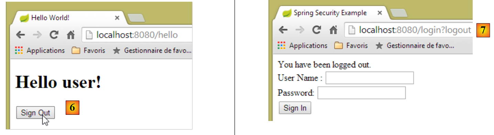 |
- In [6], we click the [Sign Out] button;
- in [7], we see that we have been redirected to the URL [http://localhost:8080/login?logout]. Spring Security requested this redirection. The presence of the [logout] parameter in the URL caused the following line to be displayed in the view:
<div th:if="${param.logout}">You have been logged out.</div>
2.13.7. Conclusion
In the previous example, we could have written the web application first and then secured it later. Spring Security is non-intrusive. You can implement security for a web application that has already been written. Furthermore, we discovered the following points:
- it is possible to define an authentication page;
- authentication must be accompanied by the CSRF token issued by Spring Security;
- if authentication fails, you are redirected to the authentication page with an additional error parameter in the URL;
- if authentication succeeds, you are redirected to the page requested at the time of authentication. If you request the authentication page directly without going through an intermediate page, Spring Security redirects you to the URL [/] (this case was not demonstrated);
- You log out by requesting the URL [/logout] with a POST request. Spring Security then redirects you to the authentication page with the "logout" parameter in the URL;
All these conclusions are based on Spring Security’s default behavior. This behavior can be changed through configuration by overriding certain methods of the [WebSecurityConfigurerAdapter] class.
The previous tutorial will be of little help to us going forward. We will, in fact, use:
- a database to store users, their passwords, and their roles;
- HTTP header-based authentication;
There are very few tutorials available for what we want to do here. The solution we’ll propose is a combination of code snippets found here and there.
2.14. Implementing security for the online appointment service
2.14.1. The database
The [rdvmedecins] database is being updated to account for users, their passwords, and their roles. Three new tables have been added:

Table [USERS]: users
- ID: primary key;
- VERSION: row versioning column;
- IDENTITY: a descriptive identifier for the user;
- LOGIN: the user's login;
- PASSWORD: their password;
In the USERS table, passwords are not stored in plain text:
 |
The algorithm used to encrypt passwords is the BCRYPT algorithm.
[ROLES] table: roles
- ID: primary key;
- VERSION: versioning column for the row;
- NAME: role name. By default, Spring Security expects names in the form ROLE_XX, for example ROLE_ADMIN or ROLE_GUEST;
 |
Table [USERS_ROLES]: USERS/ROLES join table
A user can have multiple roles, and a role can include multiple users. This is a many-to-many relationship represented by the [USERS_ROLES] table.
- ID: primary key;
- VERSION: row versioning column;
- USER_ID: user identifier;
- ROLE_ID: identifier of a role;
 |
Because we are modifying the database, all layers of the project [business logic, DAO, JPA] must be modified:
 |
2.14.2. The new Eclipse project for [business logic, DAO, JPA]
We duplicate the initial project [rdvmedecins-business-dao] into [rdvmedecins-business-dao-v2]:
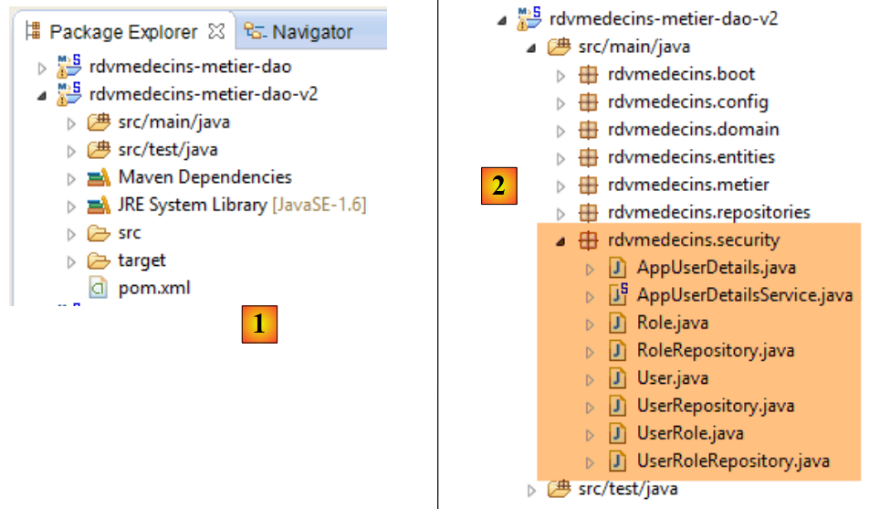 |
- in [1]: the new project;
- in [2]: the changes introduced by the implementation of security have been grouped into a single package [rdvmedecins.security]. These new elements belong to the [JPA] and [DAO] layers, but for simplicity I have grouped them into a single package.
2.14.3. The new [JPA] entities
 |
The JPA layer defines three new entities:
 |
The [User] class represents the [USERS] table:
package rdvmedecins.entities;
import javax.persistence.Column;
import javax.persistence.Entity;
import javax.persistence.Table;
@Entity
@Table(name = "USERS")
public class User extends AbstractEntity {
private static final long serialVersionUID = 1L;
// properties
private String identity;
private String login;
private String password;
// constructor
public User() {
}
public User(String identity, String login, String password) {
this.identity = identity;
this.login = login;
this.password = password;
}
// identity
@Override
public String toString() {
return String.format("User[%s,%s,%s]", identity, login, password);
}
// getters and setters
....
}
- line 9: the class extends the [AbstractEntity] class already used for the other entities;
- lines 13–15: no column names are specified because they have the same names as their associated fields;
The [Role] class mirrors the [ROLES] table:
package rdvmedecins.entities;
import javax.persistence.Column;
import javax.persistence.Entity;
import javax.persistence.Table;
@Entity
@Table(name = "ROLES")
public class Role extends AbstractEntity {
private static final long serialVersionUID = 1L;
// properties
private String name;
// constructors
public Role() {
}
public Role(String name) {
this.name = name;
}
// identity
@Override
public String toString() {
return String.format("Role[%s]", name);
}
// getters and setters
...
}
The [UserRole] class represents the [USERS_ROLES] table:
package rdvmedecins.entities;
import javax.persistence.Entity;
import javax.persistence.JoinColumn;
import javax.persistence.ManyToOne;
import javax.persistence.Table;
@Entity
@Table(name = "USERS_ROLES")
public class UserRole extends AbstractEntity {
private static final long serialVersionUID = 1L;
// A UserRole references a User
@ManyToOne
@JoinColumn(name = "USER_ID")
private User user;
// A UserRole references a Role
@ManyToOne
@JoinColumn(name = "ROLE_ID")
private Role role;
// getters and setters
...
}
- lines 15–17: define the foreign key from the [USERS_ROLES] table to the [USERS] table;
- lines 19-21: implement the foreign key from the [USERS_ROLES] table to the [ROLES] table;
2.14.4. Changes to the [DAO] layer
 |
The [DAO] layer is enhanced with three new [Repository]s:
 |
The [UserRepository] interface manages access to [User] entities:
package rdvmedecins.repositories;
import org.springframework.data.jpa.repository.Query;
import org.springframework.data.repository.CrudRepository;
import rdvmedecins.entities.Role;
import rdvmedecins.entities.User;
public interface UserRepository extends CrudRepository<User, Long> {
// list of roles for a user identified by their ID
@Query("select ur.role from UserRole ur where ur.user.id=?1")
Iterable<Role> getRoles(long id);
// list of roles for a user identified by their login and password
@Query("select ur.role from UserRole ur where ur.user.login=?1 and ur.user.password=?2")
Iterable<Role> getRoles(String login, String password);
// search for a user by their login
User findUserByLogin(String login);
}
- line 9: the [UserRepository] interface extends the Spring Data [CrudRepository] interface (line 4);
- lines 12-13: the [getRoles(User user)] method retrieves all roles for a user identified by their [id]
- lines 16-17: same as above, but for a user identified by their login and password;
The [RoleRepository] interface manages access to [Role] entities:
package rdvmedecins.security;
import org.springframework.data.repository.CrudRepository;
public interface RoleRepository extends CrudRepository<Role, Long> {
// search for a role by name
Role findRoleByName(String name);
}
- line 5: the [RoleRepository] interface extends the [CrudRepository] interface;
- line 8: you can search for a role by its name;
The [userRoleRepository] interface manages access to [UserRole] entities:
package rdvmedecins.security;
import org.springframework.data.repository.CrudRepository;
public interface UserRoleRepository extends CrudRepository<UserRole, Long> {
}
- line 5: the [UserRoleRepository] interface simply extends the [CrudRepository] interface without adding any new methods;
2.14.5. User and Role Management Classes
 |
Spring Security requires the creation of a class that implements the following [UsersDetail] interface:
 |
This interface is implemented here by the [AppUserDetails] class:
package rdvmedecins.security;
import java.util.ArrayList;
import java.util.Collection;
import org.springframework.security.core.GrantedAuthority;
import org.springframework.security.core.authority.SimpleGrantedAuthority;
import org.springframework.security.core.userdetails.UserDetails;
public class AppUserDetails implements UserDetails {
private static final long serialVersionUID = 1L;
// properties
private User user;
private UserRepository userRepository;
// constructors
public AppUserDetails() {
}
public AppUserDetails(User user, UserRepository userRepository) {
this.user = user;
this.userRepository = userRepository;
}
// -------------------------interface
@Override
public Collection<? extends GrantedAuthority> getAuthorities() {
Collection<GrantedAuthority> authorities = new ArrayList<>();
for (Role role : userRepository.getRoles(user.getId())) {
authorities.add(new SimpleGrantedAuthority(role.getName()));
}
return authorities;
}
@Override
public String getPassword() {
return user.getPassword();
}
@Override
public String getUsername() {
return user.getLogin();
}
@Override
public boolean isAccountNonExpired() {
return true;
}
@Override
public boolean isAccountNonLocked() {
return true;
}
@Override
public boolean isCredentialsNonExpired() {
return true;
}
@Override
public boolean isEnabled() {
return true;
}
// getters and setters
...
}
- line 10: the [AppUserDetails] class implements the [UserDetails] interface;
- lines 15-16: the class encapsulates a user (line 15) and the repository that provides details about that user (line 16);
- lines 22–25: the constructor that instantiates the class with a user and its repository;
- lines 28–35: implementation of the [getAuthorities] method of the [UserDetails] interface. It must construct a collection of elements of type [GrantedAuthority] or a derived type. Here, we use the derived type [SimpleGrantedAuthority] (line 32), which encapsulates the name of one of the user’s roles from line 15;
- lines 31–33: we iterate through the list of the user’s roles from line 15 to build a list of elements of type [SimpleGrantedAuthority];
- lines 38–40: implement the [getPassword] method of the [UserDetails] interface. We return the password of the user from line 15;
- lines 38–40: implement the [getUserName] method of the [UserDetails] interface. Return the login of the user from line 15;
- lines 47–50: the user’s account never expires;
- lines 52–55: the user’s account is never locked;
- lines 57–60: the user’s credentials never expire;
- lines 62–65: the user’s account is always active;
Spring Security also requires the existence of a class that implements the [AppUserDetailsService] interface:
 |
This interface is implemented by the following [AppUserDetails] class:
package rdvmedecins.security;
import org.springframework.beans.factory.annotation.Autowired;
import org.springframework.security.core.userdetails.UserDetails;
import org.springframework.security.core.userdetails.UserDetailsService;
import org.springframework.security.core.userdetails.UsernameNotFoundException;
import org.springframework.stereotype.Service;
@Service
public class AppUserDetailsService implements UserDetailsService {
@Autowired
private UserRepository userRepository;
@Override
public UserDetails loadUserByUsername(String login) throws UsernameNotFoundException {
// Search for the user by their login
User user = userRepository.findUserByLogin(login);
// Found?
if (user == null) {
throw new UsernameNotFoundException(String.format("login [%s] does not exist", login));
}
// return the user details
return new AppUserDetails(user, userRepository);
}
}
- line 9: the class will be a Spring component, so it will be available in its context;
- lines 12–13: the [UserRepository] component will be injected here;
- lines 16–25: implementation of the [loadUserByUsername] method of the [UserDetailsService] interface (line 10). The parameter is the user’s login;
- line 18: the user is searched for using their login;
- lines 20–22: if the user is not found, an exception is thrown;
- line 24: an [AppUserDetails] object is constructed and returned. It is indeed of type [UserDetails] (line 16);
2.14.6. [DAO] Layer Tests
 |
First, we create an executable class [CreateUser] capable of creating a user with a role:
package rdvmedecins.security;
import org.springframework.context.annotation.AnnotationConfigApplicationContext;
import org.springframework.security.crypto.bcrypt.BCrypt;
import rdvmedecins.config.DomainAndPersistenceConfig;
import rdvmedecins.security.Role;
import rdvmedecins.security.RoleRepository;
import rdvmedecins.security.User;
import rdvmedecins.security.UserRepository;
import rdvmedecins.security.UserRole;
import rdvmedecins.security.UserRoleRepository;
public class CreateUser {
public static void main(String[] args) {
// syntax: login password roleName
// three parameters are required
if (args.length != 3) {
System.out.println("Syntax: [pg] user password role");
System.exit(0);
}
// retrieve the parameters
String login = args[0];
String password = args[1];
String roleName = String.format("ROLE_%s", args[2].toUpperCase());
// Spring context
AnnotationConfigApplicationContext context = new AnnotationConfigApplicationContext(DomainAndPersistenceConfig.class);
UserRepository userRepository = context.getBean(UserRepository.class);
RoleRepository roleRepository = context.getBean(RoleRepository.class);
UserRoleRepository userRoleRepository = context.getBean(UserRoleRepository.class);
// Does the role already exist?
Role role = roleRepository.findRoleByName(roleName);
// if it doesn't exist, create it
if (role == null) {
role = roleRepository.save(new Role(roleName));
}
// Does the user already exist?
User user = userRepository.findUserByLogin(login);
// if they don't exist, create them
if (user == null) {
// Hash the password with bcrypt
String crypt = BCrypt.hashpw(password, BCrypt.gensalt());
// save the user
user = userRepository.save(new User(login, password, crypt));
// create the relationship with the role
userRoleRepository.save(new UserRole(user, role));
} else {
// The user already exists—does he have the requested role?
boolean found = false;
for (Role r : userRepository.getRoles(user.getId())) {
if (r.getName().equals(roleName)) {
found = true;
break;
}
}
// if not found, create the relationship with the role
if (!found) {
userRoleRepository.save(new UserRole(user, role));
}
}
// Close Spring context
context.close();
}
}
- line 17: the class expects three arguments defining a user: their login, password, and role;
- lines 25–27: the three parameters are retrieved;
- line 29: the Spring context is built from the configuration class [DomainAndPersistenceConfig]. This class already existed in the previous project. It must be updated as follows:
@EnableJpaRepositories(basePackages = { "rdvmedecins.repositories", "rdvmedecins.security" })
@EnableAutoConfiguration
@ComponentScan(basePackages = { "rdvmedecins" })
@EntityScan(basePackages = { "rdvmedecins.entities", "rdvmedecins.security" })
@EnableTransactionManagement
public class DomainAndPersistenceConfig {
....
}
- Line 1: You must specify that there are now [Repository] components in the [rdvmedecins.security] package;
- line 4: you must specify that there are now JPA entities in the [rdvmedecins.security] package;
Let’s go back to the code for creating a user:
- lines 30–32: we retrieve the references of the three [Repository] objects that may be useful for creating the user;
- line 34: we check if the role already exists;
- lines 36–38: if not, we create it in the database. It will have a name of the form [ROLE_XX];
- line 40: we check if the login already exists;
- lines 42-49: if the username does not exist, we create it in the database;
- line 44: we encrypt the password. Here, we use the [BCrypt] class from Spring Security (line 4). We therefore need the archives for this framework. The [pom.xml] file includes a new dependency:
<dependency>
<groupId>org.springframework.boot</groupId>
<artifactId>spring-boot-starter-security</artifactId>
</dependency>
- Line 46: The user is persisted in the database;
- line 48: as well as the relationship linking them to their role;
- lines 51–57: if the login already exists, we check whether the role we want to assign to them is already among their roles;
- Lines 59–61: If the role being searched for is not found, a row is created in the [USERS_ROLES] table to link the user to their role;
- We have not protected against potential exceptions. This is a helper class for quickly creating a user with a role.
When the class is executed with the arguments [x x guest], the following results are obtained in the database:
Table [USERS]
 |
Table [ROLES]
 |
Table [USERS_ROLES]
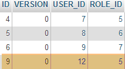 |
Now let’s consider the second class [UsersTest], which is a JUnit test:
|
package rdvmedecins.security;
import java.util.List;
import org.junit.Assert;
import org.junit.Test;
import org.junit.runner.RunWith;
import org.springframework.beans.factory.annotation.Autowired;
import org.springframework.boot.test.SpringApplicationConfiguration;
import org.springframework.security.core.authority.SimpleGrantedAuthority;
import org.springframework.security.crypto.bcrypt.BCrypt;
import org.springframework.test.context.junit4.SpringJUnit4ClassRunner;
import rdvmedecins.config.DomainAndPersistenceConfig;
import com.google.common.collect.Lists;
@SpringApplicationConfiguration(classes = DomainAndPersistenceConfig.class)
@RunWith(SpringJUnit4ClassRunner.class)
public class UsersTest {
@Autowired
private UserRepository userRepository;
@Autowired
private AppUserDetailsService appUserDetailsService;
@Test
public void findAllUsersWithTheirRoles() {
Iterable<User> users = userRepository.findAll();
for (User user : users) {
System.out.println(user);
display("Roles:", userRepository.getRoles(user.getId()));
}
}
@Test
public void findUserByLogin() {
// retrieve the user [admin]
User user = userRepository.findUserByLogin("admin");
// check that their password is [admin]
Assert.assertTrue(BCrypt.checkpw("admin", user.getPassword()));
// check the admin role
List<Role> roles = Lists.newArrayList(userRepository.getRoles("admin", user.getPassword()));
Assert.assertEquals(1L, roles.size());
Assert.assertEquals("ROLE_ADMIN", roles.get(0).getName());
}
@Test
public void loadUserByUsername() {
// retrieve the user [admin]
AppUserDetails userDetails = (AppUserDetails) appUserDetailsService.loadUserByUsername("admin");
// check that their password is [admin]
Assert.assertTrue(BCrypt.checkpw("admin", userDetails.getPassword()));
// check the admin role
@SuppressWarnings("unchecked")
List<SimpleGrantedAuthority> authorities = (List<SimpleGrantedAuthority>) userDetails.getAuthorities();
Assert.assertEquals(1L, authorities.size());
Assert.assertEquals("ROLE_ADMIN", authorities.get(0).getAuthority());
}
// utility method - displays the elements of a collection
private void display(String message, Iterable<?> elements) {
System.out.println(message);
for (Object element : elements) {
System.out.println(element);
}
}
}
- lines 27–34: visual test. We display all users along with their roles;
- lines 36–46: we verify that the user [admin] has the password [admin] and the role [ROLE_ADMIN] using the [UserRepository];
- line 41: [admin] is the plaintext password. In the database, it is encrypted using the BCrypt algorithm. The [BCrypt.checkpw] method verifies that the encrypted plaintext password matches the one in the database;
- lines 48–59: we verify that the user [admin] has the password [admin] and the role [ROLE_ADMIN] using the [appUserDetailsService];
The tests run successfully with the following logs:
2.14.7. Interim Conclusion
The necessary classes for Spring Security were added with minimal changes to the original project. To recap:
- adding a dependency on Spring Security in the [pom.xml] file;
- creation of three additional tables in the database;
- creation of JPA entities and Spring components in the [rdvmedecins.security] package;
This very favorable scenario stems from the fact that the three tables added to the database are independent of the existing tables. We could even have placed them in a separate database. This was possible because we decided that a user exists independently of doctors and clients. If the latter had been potential users, we would have had to create links between the [USERS] table and the [MEDECINS] and [CLIENTS] tables. This would have had a significant impact on the existing project.
2.14.8. The Eclipse project for the [web] layer
 |
The previous [rdvmedecins-webapi] project is duplicated in the [rdvmedecins-webapi-v2] project [1]:
 |
The only changes need to be made in the [rdvmedecins.web.config] package, where Spring Security must be configured. We have already encountered a Spring Security configuration class:
package hello;
import org.springframework.context.annotation.Configuration;
import org.springframework.security.config.annotation.authentication.builders.AuthenticationManagerBuilder;
import org.springframework.security.config.annotation.web.builders.HttpSecurity;
import org.springframework.security.config.annotation.web.configuration.WebSecurityConfigurerAdapter;
import org.springframework.security.config.annotation.web.servlet.configuration.EnableWebMvcSecurity;
@Configuration
@EnableWebMvcSecurity
public class WebSecurityConfig extends WebSecurityConfigurerAdapter {
@Override
protected void configure(HttpSecurity http) throws Exception {
http.authorizeRequests().antMatchers("/", "/home").permitAll().anyRequest().authenticated();
http.formLogin().loginPage("/login").permitAll().and().logout().permitAll();
}
@Override
protected void configure(AuthenticationManagerBuilder auth) throws Exception {
auth.inMemoryAuthentication().withUser("user").password("password").roles("USER");
}
}
We will follow the same procedure:
- line 11: define a class that extends the [WebSecurityConfigurerAdapter] class;
- line 13: define a method [configure(HttpSecurity http)] that defines access rights to the various URLs of the web service;
- line 19: define a method [configure(AuthenticationManagerBuilder auth)] that defines users and their roles;
Spring Security configuration is handled by the [SecurityConfig] class:
package rdvmedecins.web.config;
import org.springframework.beans.factory.annotation.Autowired;
import org.springframework.boot.autoconfigure.EnableAutoConfiguration;
import org.springframework.http.HttpMethod;
import org.springframework.security.config.annotation.authentication.builders.AuthenticationManagerBuilder;
import org.springframework.security.config.annotation.web.builders.HttpSecurity;
import org.springframework.security.config.annotation.web.configuration.EnableWebSecurity;
import org.springframework.security.config.annotation.web.configuration.WebSecurityConfigurerAdapter;
import org.springframework.security.crypto.bcrypt.BCryptPasswordEncoder;
import rdvmedecins.security.AppUserDetailsService;
@EnableAutoConfiguration
@EnableWebSecurity
public class SecurityConfig extends WebSecurityConfigurerAdapter {
@Autowired
private AppUserDetailsService appUserDetailsService;
@Override
protected void configure(AuthenticationManagerBuilder registry) throws Exception {
// Authentication is handled by the [appUserDetailsService] bean
// The password is encrypted using the Bcrypt hashing algorithm
registry.userDetailsService(appUserDetailsService).passwordEncoder(new BCryptPasswordEncoder());
}
@Override
protected void configure(HttpSecurity http) throws Exception {
// CSRF
http.csrf().disable();
// The password is transmitted via the Authorization: Basic xxxx header
http.httpBasic();
// Only the ADMIN role can use the application
http.authorizeRequests() //
.antMatchers("/", "/**") // all URLs
.hasRole("ADMIN");
}
}
- lines 14-15: we have reused the annotations from the example;
- lines 17-18: the [AppUserDetails] class, which provides access to the application's users, is injected;
- lines 20-21: the [configure(HttpSecurity http)] method defines users and their roles. It takes an [AuthenticationManagerBuilder] type as a parameter. This parameter is enriched with two pieces of information:
- a reference to the [appUserDetailsService] from line 18, which provides access to registered users. Note here that the fact that they are stored in a database is not explicitly stated. They could therefore be in a cache, delivered by a web service, etc.
- the encryption type used for the password. Recall that we used the BCrypt algorithm;
- lines 27–40: the [configure(HttpSecurity http)] method defines access rights to the web service’s URLs;
- line 30: we saw in the introductory project that by default Spring Security manages a CSRF (Cross-Site Request Forgery) token that the user wishing to authenticate must send back to the server. Here, this mechanism is disabled;
- line 32: we enable authentication via HTTP header. The client must send the following HTTP header:
where code is the Base64 encoding of the login:password string. For example, the Base64 encoding of the string admin:admin is YWRtaW46YWRtaW4=. Therefore, a user with the login [admin] and password [admin] will send the following HTTP header to authenticate:
- Lines 34–36: indicate that all URLs of the web service are accessible to users with the [ROLE_ADMIN] role. This means that a user without this role cannot access the web service;
The [AppConfig] class, which configures the entire application, is updated as follows:
 |
package rdvmedecins.web.config;
import org.springframework.boot.autoconfigure.EnableAutoConfiguration;
import org.springframework.context.annotation.ComponentScan;
import org.springframework.context.annotation.Import;
import rdvmedecins.config.DomainAndPersistenceConfig;
@EnableAutoConfiguration
@ComponentScan(basePackages = { "rdvmedecins.web" })
@Import({ DomainAndPersistenceConfig.class, SecurityConfig.class })
public class AppConfig {
}
- The change is made on line 11: it specifies that there are now two configuration files to use: [DomainAndPersistenceConfig] and [SecurityConfig].
2.14.9. Web service testing
We will test the web service using the Chrome client [Advanced Rest Client]. We will need to specify the HTTP authentication header:
where [code] is the Base64-encoded string [login:password]. To generate this code, you can use the following program:
 |
package rdvmedecins.helpers;
import org.springframework.security.crypto.codec.Base64;
public class Base64Encoder {
public static void main(String[] args) {
// Expects two arguments: login and password
if (args.length != 2) {
System.out.println("Syntax: login password");
System.exit(0);
}
// retrieve the two arguments
String string = String.format("%s:%s", args[0], args[1]);
// encode the string
byte[] data = Base64.encode(string.getBytes());
// display its Base64 encoding
System.out.println(new String(data));
}
}
If we run this program with the two arguments [admin admin]:
 |
we get the following result:
Now that we know how to generate the HTTP authentication header, we launch the now-secure web service. Then, using the Chrome client [Advanced Rest Client], we request the list of all doctors:
 |
- in [1], we request the doctors' URL;
- in [2], using a GET method;
- in [3], we provide the HTTP authentication header. The code [YWRtaW46YWRtaW4=] is the Base64 encoding of the string [admin:admin];
- in [4], we send the HTTP request;
The server's response is as follows:
 |
- in [1], the HTTP authentication header;
- in [2], the server returns a JSON response;
- in [3], the list of doctors.
Now let's try an HTTP request with an incorrect authentication header. The response is as follows:
 |
- in [1] and [3]: the HTTP authentication header;
- in [2]: the web service response;
Now, let’s try the user / user. It exists but does not have access to the web service. If we run the Base64 encoding program with the two arguments [user user]:
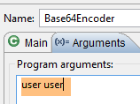 |
we get the following result:
 |
- in [1] and [3]: the HTTP authentication header;
- in [2]: the web service response. It differs from the previous one, which was [401 Unauthorized]. This time, the user authenticated successfully but does not have sufficient permissions to access the URL;
2.15. Conclusion
Let’s review the overall architecture of our client/server application:
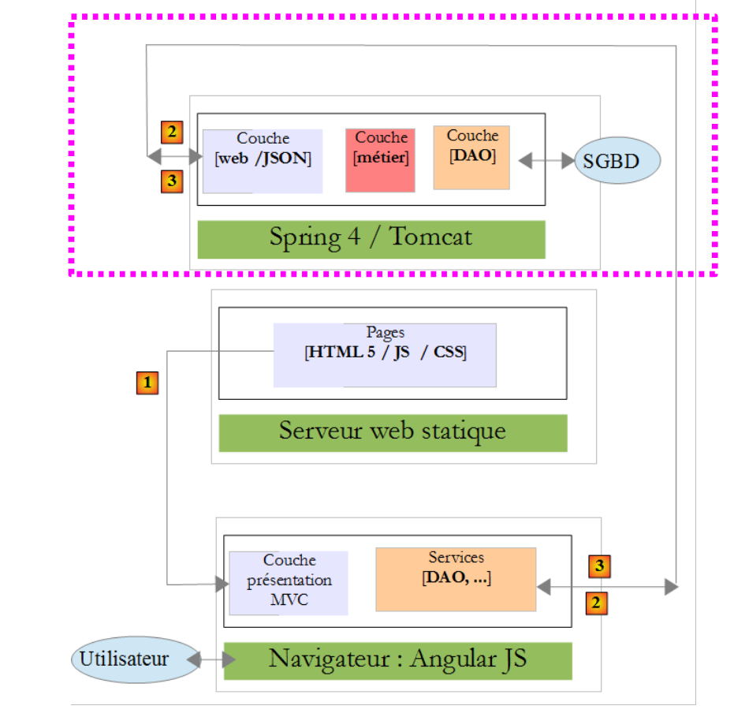 |
A secure web service is now operational. We will see that it will need to be modified due to issues that will arise during the development of the Angular JS client. But we will wait until we encounter the problem to resolve it. We will now build the Angular client that will provide a web interface for managing doctors’ appointments.